Each claim is argued in full in its own chapter; the source numbers let you check this summary without turning a page.
The contest for the hall edge — the medium-voltage block where utility power enters the data hall — is not being decided on efficiency. Every serious vendor claims 98.5%, and none publishes the boundary it measured across.1 NVIDIA itself rates the transformer-rectifier unit and the solid-state transformer identically.2 The contest is being decided instead on two things a buyer can actually check: the service-voltage class a vendor has specified, and whether it has sold anything. On that test the field turns upside down. The only solid-state transformer that any filing describes as supplying the market is specified at 10–13.8 kV and goes no higher.3 That cannot serve the 34.5 kV class at which large US campuses take their power.4 The most completely specified 34.5 kV-class design in the ledger is Heron’s, and Heron has not shipped a unit.5 The next most complete is DG Matrix’s, and DG Matrix is the one venture vendor actually shipping hardware — but what it ships today is a 480 V AC skid, rated 96–97% on its own datasheet; the medium-voltage unit its marketing rates at 15 MW is dated “2028+” in its own CFO deck.6 The only solid-state medium-voltage product an incumbent will take an order for is a UPS, not a transformer.7 And nobody, anywhere, holds a UL listing for the 800 V DC bus.1
Megmeet is missing from that table on the one axis that defines it. Its dossier pins thirty-eight sources, and none gives a kV figure for its solid-state transformer; the converter is described only as taking grid high-voltage input and delivering 800 V DC.8 A text scan of four of the company’s own filings found nothing either, and the most recent filing narrowed the claim, calling the product “under development” and its efficiency “expected”.1 What Megmeet does hold is the layer where money moves first: a published, shipping rack-and-sidecar chain, inside a power-products segment that grew 60.92% in the first half of 2026 and was the only one of the company’s three largest segments to expand its gross margin.8
This briefing builds on the repository’s 20,000-word SST primer of 12 September 2026; it does not replace it. Each of chapters 1–5 summarises the matching primer chapter in about a page, points to the primer’s figures by number, and then adds only what the primer lacks. Primer figures are referred to by number rather than redrawn. The fourteen new figures, numbered M1–M14, are drawn from one data file that also feeds the study companion, so the figures and the companion cannot disagree.
Every factual sentence ends in one small superscript number, placed after its final punctuation, like this.8 The number is a row in the numbered reference list, Appendix C.0, which gives the exact source: the dossier and its version, the primer chapter or figure, or the pages of NVIDIA’s paper. Its colour tells you what kind of source it is before you look it up. No sentence draws on two sources.
| Primer | The repository’s SST primer of 12 September 2026, which carries its own numbered first-party sources. |
| Dossier | A Profiler company dossier at a stated version. Each dossier cites its own sources and records the provenance tier of each. |
| Guidance | The page-referenced claims ledger for NVIDIA’s August 2026 execution paper, held in the repository. |
| Report | The Profiler competitive report on AIDC power conversion of 8 September 2026. |
| Web | Research performed for this document on 23 September 2026. Every web source shares one number; the URLs are listed in Appendix C. |
| A Analysis | A reading of the evidence, not a source, so it has no number. A gold A marks a single sentence of inference, most often a statement that nobody publishes something. A longer passage of inference sits in a box labelled analysis. |
Two rules hold throughout. No estimate is stated as a fact: when a figure comes from a vendor, a brokerage, a research house or a trade group, the same sentence names the source and its incentive. And where a vendor has not disclosed something, the cell reads undisclosed — Megmeet’s own SST included.
Where the number sits in a table or list. In the wide reference tables of chapters 6, 7, 10 and 11, a row is one claim assembled from one source. It carries one number, at the end of the cell whose sentence it governs, and that number covers the rest of the row. Where a row draws on two sources, each sentence carries its own number and neither covers the other. A table cell or list item drawn wholly from one source likewise carries a single number at its end.
Two fixed vocabularies are used and never varied. Limitation status is unsolved lab pilot product standardised. Evidence tier is announced lab demo factory test field pilot undisclosed.
The reader has heard, unverified, that Megmeet is in active communication with NVIDIA’s and Oracle’s engineering teams. That is hearsay. It steered the emphasis of chapter 8, which is longer and more specific than it would otherwise be. It is stated here once, as hearsay, and nothing anywhere in this document is sourced to it: no claim in chapter 8, or anywhere else, depends on it being true. The repository’s report engine applies the same rule to field notes: they may steer scope, but they never appear as content.
Everything below the converter in Megmeet’s chain is a socket: a standardised form factor that is competed for again with every architecture generation. There the company is measurably competitive and growing. The converter is a block: something a customer specifies once for a campus and then buys for years. Megmeet is winning at the socket and is not yet in the contest for the block, because a block is specified by its input voltage class and Megmeet has not published one. That is a fact about disclosure, not a judgement of capability, and a specification can be published within a quarter. The only risk is that the block consolidates around two or three certified converters before Megmeet publishes.
Twenty-three numbers, each with its source. If you memorise one table in this document, make it this one: most of these numbers answer a question an engineer will actually ask.
| What | Number | Why it is the number, and what it is not |
|---|---|---|
| Power per mm² of copper, 800 V DC against 415 V AC | +157% | NVIDIA’s conductor argument: the same copper carries more power at a higher voltage. The usual North American upgrade, to 480 V AC, buys only +16%; 1500 V DC would buy +382% but has no base of indoor-rated components in the US.13 |
| Current for one megawatt at 54 V DC | 18.5 kA | The number that ended 54 V distribution. Conductors are sized by current, not power, and current is power divided by voltage: a megawatt at 54 V is 18.5 thousand amperes.14 |
| Core-area shrink, 60 Hz → 10 kHz | ~170× | The transformer equation, V ≈ 4.44·f·N·B·A, says voltage is proportional to frequency (f) × turns (N) × flux density (B) × core area (A). Hold the voltage, turns and flux density fixed and the core area falls as the frequency rises. This is the whole reason an SST exists.15 |
| SST mass against its 60 Hz equivalent | ~40× lighter | Infineon’s own comparison: about 20 tonnes down to about 500 kg, and 14× smaller. Treat it as a supplier’s figure, since Infineon sells silicon into the technology.16 |
| Cells per phase, 13.8 kV with 1.7 kV SiC | 14–15 | That is 42–45 cells across the three phases, and each is a complete converter with its own capacitor, MFT, gate drivers and sensors.17 |
| Cell multiplier, 13.8 kV → 34.5 kV | ~2.5× | Cells, magnetics, gate drivers and control channels all scale by this factor. That is why a 13.8 kV SST is a different product from a 34.5 kV one, not a setting on the same product.4 |
| SST efficiency band, MV to DC | 97–98.5% | Compare 99.0–99.5% for a good 60 Hz distribution transformer alone, before any rectifier. NVIDIA rates the MV rectifier and the SST identically.18 |
| Oil transformer overload | 200% / 30 min | The largest engineering advantage the incumbent keeps. No first-party SST vendor publishes an overload curve at all.11 |
| DC fault current rise rate Siemens measured | 200 A/µs | The current climbs by 200 amperes every microsecond. At that rate, interrupting the discharge of the bus capacitors “was only possible with solid-state circuit breakers”; clearing with fuses took about 20 ms.19 |
| Insulation a 35 kV interface needs | ~100 kV | “Three times the insulation”, in TDK’s assessment. NC State reaches 100 kV BIL (basic insulation level, the impulse voltage equipment must withstand) at over 99.5% transformer efficiency at 40 kHz.20 |
| Largest independently validated SST on a live US feeder | 1 MVA | At 13.2 kV, by NC State with NYPA and EPRI. Vendors quote products of 3–7.5 MVA; the gap between the two is the risk a buyer is being asked to carry.21 |
| ERCOT large-load queue against approvals | 410 / 9.0 GW | At ERCOT, the Texas grid operator, about 410 GW of large loads were queued as of March 2026, against 9.0 GW approved to energise and an observed large-load peak of 3.9 GW. An SST shortens none of that queue.4 |
| US transformer lead time, standard units | 128 weeks | 144 weeks for generator step-up units, and worst cases near four years. This wait is what every SST is really sold against.22 |
| Data-centre load dropped, 10 July 2024, Virginia | ~1,500 MW | Six faults in 82 seconds. None of the load was disconnected by utility equipment; all of it tripped on customer-side protection.23 |
| Data-centre load dropped, 22 July 2026, Dominion territory | 3.8 GW | A second, larger event, on a fault that was cleared normally. It is not the 2024 event; do not conflate the two.1 |
| ERCOT NOGRR 282 ride-through test | 2 s @ 0.85 pu | NOGRR 282 is the ERCOT rule change that sets it. Stay connected for 2 s at 0.85 pu (per unit: 85% of normal voltage) and for 150 ms below 0.35 pu; draw no more than 150% current; recover 90% within 2 s; survive six sags in 90 s. A converter meets it by design, but must prove it in a submitted model.1 |
| NVIDIA’s standardised DC power block | 4.8 MW | A 6,000 A-class switchboard, parallel 1,250 A busways, and 4+1 catcher redundancy (four working blocks and a reserve that catches the load of a failed one) through a DC static transfer switch, in 20 MW deployment units. Every vendor has to answer how its product composes into this block.24 |
| Rack power ladder, Gen 1 → Gen 4 | 145→1,000 kW | Power per rack across NVIDIA’s four generations: 145 → 330 → 570 → about 1,000 kW. These figures are page-referenced in the repository’s copy of the August 2026 paper and not confirmed on any public NVIDIA page.25 |
| Megmeet H1 2026 power-products growth | +60.92% | To RMB 1.841 billion. It was the only one of the three largest segments with an expanding gross margin, at 25.06%.8 |
| Megmeet H1 2026 profit excluding non-recurring items | −16.13% | Against headline attributable net profit of +45.21%. Always quote both; an analyst will have both.1 |
| Megmeet FY2025 revenue | RMB 9.403bn | About USD 1.3 billion, not USD 13 billion. The Chinese unit 亿元 means one hundred million yuan, and machine translation renders it as “billion” with depressing regularity.8 |
| Sungrow EnerNeo class ceiling | 13.8 kV | The only SST a filing describes as supplying the market, and it cannot serve a 35 kV-class campus.3 |
| Megmeet SST service-voltage class | undisclosed | The string “kV” appears in none of the 38 pinned dossier sources, and there was no hit for kV, 千伏 (kilovolt) or 中压 (medium voltage) in a text scan of four filings.1 |
The primer closed on 12 September 2026 with a dated watch-list, its §8.2, What to watch, and when.26 Since then three company dossiers have landed on 19 September and one on 21 September, and three of the five changes below rest on web findings that postdate the primer.1 These five are what a reader of the primer does not yet know.A
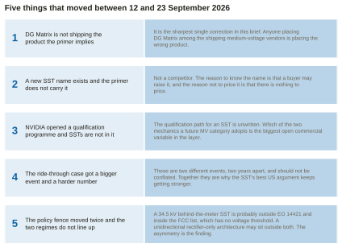
megmeet-sst-briefing-data.json → watchlistDelta.The primer places DG Matrix at “pilots” in the hall-edge layer and describes “a 12–34.5 kV AC MV skid to 400–1,500 V DC … with paid pilots since Q1 2025”.27 The dossier that landed on 19 September shows that the product actually on the market is the Interport Flex Series: a six-port low-voltage skid (equipment pre-assembled on one frame) whose own specification sheet rates the AC port at 400–480 V three-phase, the DC port at 300–850 V, and peak efficiency at 96–97%.6 The medium-voltage Interport Cell Series, the product that would compete with Heron and Amperesand at the hall edge, is dated “2028+” in the company’s own CFO deck.6 This is the sharpest single correction in this document: anyone who counts DG Matrix among the shipping medium-voltage vendors is counting the wrong product.
Novos Power is a San Diego company registered in California on 7 November 2025.28 It has two to ten employees, no disclosed funding round, no SEC Form D filing, no patent or paper visible in any public database, and no named customer.28 Its only named product is the Variable Airgap Solid State Transformer, and “variable airgap” is undefined on the record: no company document, patent, application, paper or talk abstract explains what is varied, or why.28 Its own channels state its input range three ways — 13–48 kV on the website, 35 kV in a July 2026 post — and 48 kV lies above the 38 kV ceiling of UL 2877, the standard that would govern a medium-voltage power supply.28 It is not a competitor. The reason to know the name is that a buyer may raise it.
NVIDIA DSX Ready launched on 21 September 2026 to qualify partner products against the requirements of DSX, NVIDIA’s reference design for AI factories.1 At launch it covers exactly two categories: battery energy storage (BESS), with Hitachi Energy, LG Energy Solution and Tesla, and coolant distribution units (CDUs), with LG Electronics, LiquidStack and Vertiv.1 The two categories qualify differently: BESS partners run the required tests and submit the data for NVIDIA to review and approve, while CDU partners use a self-qualification suite.1 NVIDIA says further categories will follow, but it publishes no timeline and names no transformer, switchgear, rectifier or MV-conversion category.1
There is no qualification path for a solid-state transformer yet, and which of the two mechanics a future MV category adopts is the largest open commercial variable in this layer. A test-data gate that NVIDIA adjudicates is a long, expensive, defensible moat; a self-qualification suite is a fast, cheap, crowded one. In a first meeting, the useful posture is not to ask when the category opens but to offer to help write it. The unwritten category is the opportunity, not the obstacle.
Ride-through is a load’s ability to stay connected through a voltage disturbance instead of tripping off, and the primer anchors it on the Virginia event of 10 July 2024.29 A failed lightning arrester on a 230 kV line produced six faults in 82 seconds, and about 1,500 MW of data-centre load left the grid on customer-side protection: roughly 1,260 MW of it at the third voltage dip, and none of it disconnected by utility equipment.29 A second, larger event is reported on 22 July 2026 in Dominion’s territory, in which 3.8 GW of data-centre load dropped on a fault that was cleared normally.1 Meanwhile ERCOT’s NOGRR 282 has turned ride-through from a principle into a numeric acceptance test: stay connected for two seconds at 0.85 per unit (85% of normal voltage) and for 150 milliseconds below 0.35 per unit, draw no more than 150% of normal current, recover 90% of normal consumption within two seconds, and withstand six sags in 90 seconds.1
Analysis: they are two years apart and differ in size. The 2024 event is the one NERC’s incident review documents and the primer reconstructs; the 2026 event is the one the current standards work is being written against. Anyone who works on large-load interconnection will correct a briefing that merges them into “the Virginia event”.
The primer records the FCC’s action of 28 July 2026 adding foreign-produced connected power inverters to the Covered List, the Federal Communications Commission’s list of equipment it treats as a national-security risk.30 Executive Order 14421, “Declaring a National Emergency to Secure the United States Bulk-Power System”, followed on 26 August 2026.1 It covers transformers, inverters, circuit breakers, generation turbines, reactors and battery storage, plus associated software, firmware and remote-access capability linked to a covered foreign entity — but only on transmission facilities rated 69 kV and above, with local distribution explicitly excluded.1 An August 2026 FCC update then removed pure AC-to-DC rectifiers and off-grid inverters from the Covered List and added a safe harbour tied to 45X, the US advanced-manufacturing production tax credit.1
A 34.5 kV hall-edge SST installed behind the utility meter is probably outside Executive Order 14421, because it sits on local distribution below 69 kV. It is probably inside the FCC Covered List, which has no voltage threshold at all and captures any bidirectional AC↔DC device with remote communication. A rectifier-only architecture, which can pass power in one direction only, may sit outside both. The two regimes were written for different problems and do not fit together; for a hall-edge converter, the one that binds is the FCC list.
7 October 2026 is a Wednesday.1 The market hands you four dated milestones inside the first ninety days, and none of them waits.A
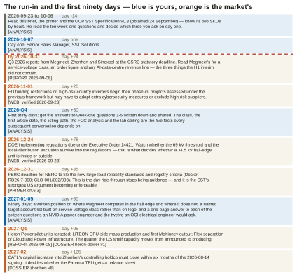
megmeet-sst-briefing-data.json → calendar.Obtain the OCP LVDC Solid-State Transformer Specification v0.3 of July 2026. It is the vocabulary every counterparty in this market will use, more than eighty manufacturers are reported to be building to it, and it could not be retrieved for this briefing: opencompute.org, the site of the Open Compute Project (OCP) through which the hyperscalers publish open hardware specifications, returned HTTP 403 to every attempt from this environment, through two different tools.1 Everything this document says about the specification’s contents is therefore second-hand, and is flagged as such wherever it appears.
Extends the primer’s chapter 3 (the conversion, stage by stage) and chapter 9 (a forty-term glossary). The primer teaches the mechanism and lists the words. This chapter arranges the words into a system: seven families, grouped the way an engineer thinks about the machine, and for each term the one number that anchors it and a sentence a buyer’s engineer would use it in. The families are topology (how the converter is arranged), magnetics (the transformers inside it), devices (the semiconductor switches), protection (how faults are stopped), control (how it behaves towards the grid), grid interface (where it meets the utility) and standards (how it gets approved). Every term also appears in the printed flashcard deck in Appendix B and in the study companion’s spaced-repetition widget.
Follow the power through one unit first, and the topology terms fall into place:
Read the “number to remember” column first, all the way down. Those twenty-five numbers — one for every term except ISOP, which is a pattern rather than a quantity — separate someone who has read about SSTs from someone who can hold a technical conversation for twenty minutes. The definitions you can look up; the numbers you have to carry. The first three columns are sourced and each cell carries its own source number. The fourth column, the sentence to say it in, is analysis throughout: scripted language for a conversation, not a sourced record.
| Term | What it is | The number to remember | The sentence to say it in (analysis) |
|---|---|---|---|
| SST — solid-state transformer | A power-electronic converter that provides a transformer’s two functions — changing the voltage, and galvanic isolation, meaning no direct electrical path between input and output — through medium-frequency magnetics, with controllable AC-DC and DC-DC stages on either side.32 | 97–98.5% efficiency for MV-to-DC units; 99.0–99.5% for a good 60 Hz distribution transformer alone18 | "It is a converter, not a transformer. That is why it can also rectify, regulate and ride through — and why it has the overload manners of a computer rather than of a block of iron." |
| ISOP — input-series, output-parallel | The connection pattern of an SST: cells stacked in series on the medium-voltage input, so each sees a fraction of the line voltage, and tied in parallel on the low-voltage output.31 | — | "Series on the MV side so each cell sees a fraction of the line; parallel on the LV side so they make one stiff bus." |
| CHB — cascaded H-bridge | A multilevel converter built from single-phase full bridges (H-bridges) connected in series. It is the standard way to face medium voltage with low-voltage semiconductors: stack enough cells and each carries only its share of the line.17 | 13.8 kV needs 14–15 cells per phase with 1.7 kV devices; 34.5 kV needs about 2.5× as many33 | "The cell count is the cost driver — each cell is a complete converter with its own capacitor, transformer, gate drivers and sensors." |
| DAB — dual active bridge | An isolated DC-DC converter with an active full bridge on each side of the transformer. Power flow is set by the phase shift between the two bridges’ square waves, so it can run in either direction by construction.34 | 5–50 kHz switching35 | "Both bridges are active, so power can go back to the grid. A passive rectifier can never do that." |
| CLLC / LLC | Resonant isolated DC-DC topologies. A resonant tank circuit (the inductors and capacitors that give the names their Ls and Cs) lets the switches turn on and off at zero voltage or zero current, which cuts switching loss; CLLC is the bidirectional form.35 | NVIDIA specifies a 64:1 LLC with a matrix transformer to go from 800 V straight to 12 V inside the rack12 | "Resonant variants trade control range for soft switching and lower loss — and they tend to lose soft switching at light load." |
| MMC — modular multilevel converter | A multilevel converter built from half-bridge cells and used in HVDC (high-voltage DC) transmission; an alternative front end to the CHB at higher voltages.36 | N+1 redundancy (one spare cell beyond those needed) raises a modular multilevel drive’s MTBF (mean time between failures) by about 1.7× — the one independent redundancy number available1 | "It is also where the SST’s service model comes from: MV drives have been swapping cells in minutes for two decades." |
| TRU / MV rectifier | A conventional transformer stepping medium voltage down to low voltage, feeding a rectifier — diode, thyristor or active — to produce 800 V DC.37 | NVIDIA’s named near-term path, mature from electrolysis, rail and mining. NVIDIA rates the MV rectifier and the SST identically, at 98.5% or better and as large as 7.5 MVA2 | "NVIDIA’s own paper calls the TRU a faster, proven path and reserves the SST for the next generation. Do not sell against the TRU on efficiency — they are rated the same." |
| Term | What it is | The number to remember | The sentence to say it in (analysis) |
|---|---|---|---|
| MFT — medium-frequency transformer | The kilohertz transformer inside each SST cell. It is small because the volt-seconds it must carry in each cycle fall as the frequency rises. It is demanding because it must hold medium-voltage insulation in that small volume while the fast-switched square waves of pulse-width modulation (PWM) stress it.38 | Raising f from 60 Hz to 10 kHz shrinks core area by roughly 170×; a 4 MW unit weighs about a fortieth of its 60 Hz equivalent — Infineon’s comparison is 20 tonnes to about 500 kg10 | "The magnetics are the part with the fewest suppliers: a low-loss nanocrystalline or ferrite core, MV insulation between windings, and a cooling path for the losses in a small volume." |
| BIL — basic insulation level | The lightning or switching impulse voltage a piece of equipment must withstand. It is set by the equipment class in the ANSI C84.1 standard, not by the vendor.39 | 15 kV class = 95 kV BIL; 25 kV class = 125 kV; 35 kV class = 150 kV4 | "The class sets the insulation, the BIL and the cell count — which is why a 13.8 kV SST is a different product from a 34.5 kV one." |
| PD — partial discharge | Small, localised electrical breakdown inside insulation. It does not bridge the electrodes, but it erodes the insulation over time, and the very fast voltage swings (high dv/dt) of wide-bandgap devices such as SiC drive it.20 | A 35 kV interface needs roughly 100 kV of insulation — "three times", in TDK’s assessment20 | "Oak Ridge’s point is that IEEE C62.82.1 was written for iron: localised overstress can occur even when terminal-level clamping looks adequate, and impulse tests may not reflect internal stress." |
| Term | What it is | The number to remember | The sentence to say it in (analysis) |
|---|---|---|---|
| SiC — silicon carbide | A wide-bandgap semiconductor: its wider energy gap lets a device block more voltage and switch faster than one made of silicon. SiC makes 1.2–3.3 kV MOSFETs (the transistor type used as the switch) practical at kilohertz switching, and it is the enabling device of the SST.40 | Production classes 1.2, 1.7 and (from few suppliers) 3.3 kV; 6.5 and 10 kV exist as samples. SiC fell from over $10/A (dollars per ampere of rating) in 2018 to $2–3/A in 202540 | "Moving from 1.7 kV to 3.3 kV devices roughly halves the cell count. That is why Amperesand builds on 3.3 kV parts, and why Wolfspeed’s wafer capacity is a supply question for the whole layer." |
| Cosmic-ray derating | Atmospheric neutrons, produced by cosmic rays, can cause single-event burnout in power devices held at a high electric field, so each cell’s DC-link voltage is set well below the device’s rating.41 | The customary derating is about 0.55 × device rating — the factor behind every cell-count figure in this brief1 | "Burnout can occur at 50% or less of rated breakdown, so the derating is not conservatism. It is the design rule." |
| Fail-short | The property a die (a single semiconductor chip) in a series stack needs: when it fails it must keep conducting, so the stack stays up until the cell can be bypassed.42 | Oak Ridge National Laboratory (ORNL) calls SiC fail-short in series stacks "an open research challenge"42 | "Press-pack silicon fails short and keeps conducting for months. SiC’s thermal stability, small die area and short short-circuit withstand make that hard — and it is the reliability question a careful buyer will actually ask." |
| Term | What it is | The number to remember | The sentence to say it in (analysis) |
|---|---|---|---|
| SSCB — solid-state circuit breaker | A semiconductor switch that interrupts DC fault current in microseconds. It is needed because DC has no natural current zero, the moment in every AC cycle that a mechanical contact exploits to put out its arc.19 | NVIDIA targets 125 A air-cooled and 1250 A liquid-cooled solid-state breakers, with moulded-case circuit breakers (MCCBs) as the Day-1 branch device43 | "Siemens measured it: at a 200 A/us rise rate, capacitor-discharge interruption was only possible with solid-state breakers. Fuses peaked near 9.4 kA at about 3 ms." |
| HRMG / HRRG | High-resistance midpoint grounding and high-resistance return grounding: two of the four schemes under evaluation for connecting a two-wire 800 V DC bus to earth, alongside floating (no ground connection) and solid grounding.44 | Four candidates; the paper leans towards HRMG44 | "HRMG grounds both conductors symmetrically through a midpoint resistor network. The conductor-to-ground voltages stay balanced, fault detection works the same on both conductors, and it keeps operating after the first fault." |
| IMD / RCM | Insulation monitoring device and residual current monitor, two ways of detecting current leaking to ground. The facility zone uses IMD/IRM, which raises an alarm without shutting down; the rack interface zone prefers RCM for fast leakage detection.45 | Two protection zones45 | "The 125 A whip stays de-energised during install and removal — the mechanical lock must engage before an enable signal closes the contactor. That is EV-charging lineage, and they will expect you to know it." |
| Term | What it is | The number to remember | The sentence to say it in (analysis) |
|---|---|---|---|
| AFE — active front end | A rectifier built from controlled switches rather than diodes. It draws sinusoidal current at unity power factor (current in step with voltage), can supply reactive power, and can be programmed to follow a ride-through curve.46 | IEEE 519 limits total voltage distortion to 5% at the point of common coupling, with no individual harmonic above 3%23 | "This is the SST’s real US argument: the converter is the model. A transformer cannot be programmed to a ride-through curve; an active front end is the curve." |
| Grid-forming | A converter that sets the voltage and frequency rather than following them; this includes black start, restarting a network that has gone dead.5 | Heron claims IEEE 2800 and ERCOT NOGRR 282 compliance with under 1% ripple injected at MV5 | "Grid-forming is what turns a gigawatt load into a grid citizen rather than a grid problem." |
| Ride-through | A load’s ability to stay connected through a voltage or frequency disturbance instead of tripping.23 | NOGRR 282: 2 s at 0.85 pu, 150 ms below 0.35 pu, no more than 150% current, 90% recovery within 2 s, six sags in 90 s1 | "The root cause in Virginia in July 2024 was not the transformer. It was a disturbance-counting scheme and manual retransfer. An SST does not override downstream customer logic, and the cooling plant is usually not behind the critical bus." |
| Term | What it is | The number to remember | The sentence to say it in (analysis) |
|---|---|---|---|
| Service-voltage class | The equipment class, under the ANSI C84.1 standard, of the utility feed a site takes. It sets insulation, BIL and cell count — and therefore the product.47 | 12.47/13.2/13.8 kV = 15 kV class; 24.9 kV = 25 kV class; 34.5 kV = 35 kV class; gigawatt campuses tie in at 69-345 kV4 | "Large greenfield campuses in Texas and the Southeast trend to 34.5 kV because it moves more power on fewer, smaller feeders. Northern Virginia runs 34.5 kV distribution behind 230 kV ties." |
| PCC — point of common coupling | Where the customer’s installation meets the utility’s system, and where IEEE 519 harmonic limits are assessed.48 | Limits tighten at higher voltage and at a lower short-circuit ratio, that is, on a weaker grid48 | "For an SST-fed hall the PCC is usually the utility’s MV side — so your harmonic signature is measured at 34.5 kV, not at the rack." |
| The 4.8 MW block | NVIDIA’s standardised DC power block for a data hall: medium voltage in, a 6000 A-class DC switchboard, parallel 1250 A busways (enclosed bars that carry power along the row) and 4+1 catcher redundancy through a DC static transfer switch.24 | 4.8 MW per block, 20 MW deployment units of four scalable units24 | "Every vendor now has to answer how it composes into 4.8 MW blocks and 1250 A busways with the tap-can interface. Paralleling, busway compatibility and catcher participation are the three concrete questions." |
| Term | What it is | The number to remember | The sentence to say it in (analysis) |
|---|---|---|---|
| UL 1741 / 347A / 2877 | The US listing routes: the product-safety certifications a US inspector looks for. UL 1741, with supplements SA and SB, is the dominant path for inverters and converters; UL 347A and UL 2877 cover medium-voltage power conversion from 1 kV up to 38 kV.1 | 1 kV to 38 kV is the listed medium-voltage range; 38 kV is the ceiling1 | "Know your listing status precisely. The most quotable line from PCIM Europe 2026 is that there is no UL certification for the 800 VDC bus, and that this is a major gap." |
| IEC 62477-2 | The international safety envelope for MV converters: 1 kV AC / 1.5 kV DC up to 36 kV AC / 54 kV DC. Edition 2 went to CDV (committee draft for vote), with voting closing 13 March 2026.1 | 36 kV AC ceiling1 | "The envelope exists internationally. What does not exist anywhere is a listed data-centre SST." |
| DC arc flash | The explosive release of energy when an arc strikes on a DC system. NFPA 70E 2027, the US workplace electrical-safety standard, names the hazard, and no standard can yet calculate it: IEEE 1584-2018, the arc-flash calculation method, covers AC only.49 | 70E 2027 adds Article 310 with DC thresholds; the NFPA research project aims its model at 70E 2030 — a three-year gap1 | "Operators will energise 800 V DC busway for years with no validated way to compute incident energy. The interim answer is conservative table-based PPE, de-energised-work rules and negotiation with the local inspector, the AHJ, project by project." |
| OCP LVDC SST Specification v0.3 | The specification the layer is being built to, from Microsoft, Google and NVIDIA, July 2026. More than 80 manufacturers are reported to be building to it.1 | v0.3, July 20261 | "This is the vocabulary your counterparties will use. Read it before the first meeting — and note that it could not be retrieved in this run, because opencompute.org refused every request." |
Class. Not “voltage”: class. A buyer’s engineer does not ask what voltage your converter takes; they ask what class, because the ANSI C84.1 class sets the insulation, the BIL, the cell count and therefore the product. Someone who says “we can do medium voltage” has told them nothing. Someone who says “35 kV class, 150 kV BIL” has told them everything.
Boundary. Every efficiency figure in this market is meaningless without one. When a vendor says 98.5%, the right response is: across which terminals, at what load point, and including auxiliaries and cooling or not? Nobody publishes the answer, so the first vendor who does gains an advantage that costs it nothing.
Undisclosed. Used precisely, the word is a credibility asset, not a weakness. It says: I know exactly what my company has and has not published, and I will not guess in front of you. Used loosely, as a way of dodging a question, it does the opposite.
Extends the primer’s chapter 2 (the AC hall), chapter 4 (SST against transformer-rectifier unit), figure 3 (the three chains) and figure 8 (published chain losses). The primer draws the comparison the industry argues about: SST against TRU. It does not draw the full adjacency: the six devices that can sit at the hall edge, scored on the nine attributes a buyer’s engineer actually works through, plus the four lineages an SST inherits from. Confusing any two of these six is the most common error in the market, and three of the four things most often called SSTs are not SSTs.
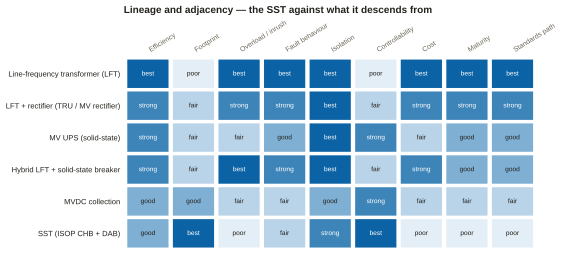
megmeet-sst-briefing-data.json → lineage.| Device | What it is, and the number that characterises it |
|---|---|
| Line-frequency transformer | The incumbent: a conventional transformer running at the grid’s own frequency, 60 Hz in the US (hence line-frequency transformer, LFT). It is 99.0–99.5% efficient at rated load, carries 200% overload for 30 minutes on thermal mass alone, and has a 128–210 week lead time, which is the reason this entire category exists.50 |
| LFT + rectifier (TRU) | A conventional transformer stepping medium voltage down to low voltage and feeding a multi-pulse or active rectifier. NVIDIA rates it at 98.5% or better, calls it “a faster and proven path for quick 800 VDC deployment”, credits it with “strong fault isolation” and “improved compatibility with existing 34.5 kV utility distribution”, and calls it “highly practical for approximately 5 MW-class power block deployment”.51 It inherits the transformer’s thermal mass, which is the largest engineering advantage it holds over an SST. |
| MV UPS (solid-state) | Not an SST. ABB’s HiPerGuard is 2.5 MW per unit, hard-paralleled up to 25 MW, at 4.16–34.5 kV and 98% efficiency. It holds UL 1741, was the first of its kind to achieve UL 9540 (the US safety standard for energy-storage systems), and its installed base includes Applied Digital’s 400 MW and 300 MW North Dakota campuses. Its output is medium-voltage AC.7 |
| Hybrid LFT + SSCB | The cheapest way to buy most of the SST’s fault performance without the converter: keep the iron and add a semiconductor breaker. ABB’s SACE Infinitus is the first IEC-certified solid-state circuit breaker.7 |
| MVDC collection | Medium-voltage DC collection is the adjacent lineage most SST vendors actually come from, along with MV drives, STATCOMs and traction. ABB’s own SST heritage runs back to its 2012 PETT railway unit (a power-electronic traction transformer) at 15 kV, 1.2 MW and about 96%.7 |
| SST (ISOP CHB + DAB) | 97–98.5% from MV to DC, about one third the weight and volume of an LFT-based chain according to ORNL, a continuous rating near 1.0–1.2× nameplate with no published overload curve, and a price that trade reporting puts at roughly twice a conventional transformer’s.52 |
| From | What comes across |
|---|---|
| MV drives | The cascaded-H-bridge topology itself, and the cell-swap service model, with two decades of field history behind it. GE Vernova markets its MM7 modular multilevel drive on modularity that “can increase MTBF as well as decrease MTTR” (mean time to repair), with modules “light enough for one or two people to swap a faulty unit with a spare within a few minutes”. The swap-in-minutes claim every SST vendor makes is therefore not new to SSTs.1 |
| STATCOMs | From the static synchronous compensator, the converter utilities use to support grid voltage, comes the four-quadrant active front end: unity power factor, reactive support, and the grid-forming control that lets a converter behave as a grid citizen rather than as a passive load.53 |
| Traction | The original SST. ABB’s PETT railway unit of 2012 ran at 15 kV, 1.2 MW and about 96%: the first megawatt-class SST anybody energised, fourteen years before this market existed.7 |
| EV charging | The interlocked-connector discipline NVIDIA specifies for the 125 A DC whip (the flexible cable that feeds a rack). The whip is hardwired to the tap can on the busway behind a normally-open contactor; the mechanical lock must engage before an enable signal closes the contactor, and on release the contactor opens before the connector unlocks.45 |
| PV and storage inverters | The manufacturing base. Sungrow, SolarEdge, Enphase and Power Electronics are all inverter houses reaching up into the hall edge.3 That is why the FCC’s inverter action lands on this layer and not on the rack.1 |
Zhonhen’s Panama is a transformer-rectifier lineup: medium-voltage switchgear, phase-shifting transformers and rectifier cabinets in one prefabricated skid.54 NVIDIA’s own paper names the Panama Architecture as a TRU implementation — as an architecture, not as a company.54 ABB’s HiPerGuard is a static medium-voltage UPS whose output is MV AC.7 Vertiv’s PowerDirect is a rack and sidecar DC product at 400–900 kW, and Vertiv’s own release contains no reference to medium voltage or SSTs.55 Getting any of these wrong in front of an engineer costs more credibility than admitting you do not know a number.
Extends the primer’s chapter 2.2 (what NVIDIA specified), chapter 4.2 (the staging) and figure 7 (the timeline). The primer covers the argument of NVIDIA’s October 2025 white paper and the three options in its August 2026 execution paper. This chapter adds the engineering detail an SST vendor is actually measured against — the protection zones, the grounding candidates, the breaker ratings, the block arithmetic — and the two things NVIDIA has done since the primer closed.
NVLink, NVIDIA’s GPU-to-GPU interconnect, wants more GPUs within reach of its copper links, so more GPUs go into each rack and rack power climbs, generation by generation.25
Distribution at 54 V DC physically runs out of road along the way, because one megawatt at 54 V is 18.5 kA.14
The 145 / 330 / 570 / ~1,000 kW ladder is page-referenced to the repository’s copy of NVIDIA’s August 2026 execution paper.25 A dedicated search of NVIDIA’s public pages on 23 September 2026 could not confirm those four figures on any NVIDIA-hosted page.1 Those pages bound the same ladder more loosely, as “racks ranging from 100 kW to over 1 MW” and “1 MW IT racks starting in 2027”.1 When you quote NVIDIA publicly, use NVIDIA’s public language; keep the four-step ladder for your own model.
NVIDIA’s core claim is that its four deployment forms are “not sequential requirements, but flexible deployment options”, chosen by facility, timeline and density.56 Read the table as a menu, not a staircase.
| Form | Date | What it is, in the numbers a vendor must answer to |
|---|---|---|
| AC baseline | now | 480 V AC to the rack over 100 A AC whips, 4-to-make-3 rack feed redundancy, and conversion to low-voltage DC inside the rack. Fully supported and not going away.57 |
| Option A — Power Rack | production Q3 2026 | A 19-inch power rack beside the compute racks. In: twelve 100 A AC whips at 415–480 V three-phase, with no neutral. Inside: air-cooled shelves of six 18.3 kW power supplies, each holding 1,200 J of stored energy to shape the current it draws. Out: about 660 kW of 800 V DC over 125 A interlocked DC whips, point to point, with no busbar. An optional BBU of four 20 kW units gives 80 kW for 60 s, N+1. Certified under UL 62368-1. Explicitly a bridge.58 |
| Option B — Power Center | deployment as soon as Q3 2027 | End-of-row DC power centres adjustable to 2 MW and deployed at about 1.6 MW in four-to-make-three, so that three of the four carry the load: a 4.8 MW effective cluster. Power is distributed over overhead 800 V DC busway with 1,250 A feeders and 125 A tap cans (the boxes that tap a rack’s feed off the busway), and an MCCB clears a fault at the 125 A branch in up to about 20 ms. It retrofits without modifying upstream AC electrical rooms.59 |
| Option C — DC Power Block | initial implementation now, as a transformer-rectifier block; the August 2026 rollout statement puts the full DC power block at 2027+ | Blocks of about 4.8 MW at the hall edge: MV AC in, a step-down transformer, low-voltage rectification, a 6,000 A-class DC switchboard, and parallel 1,250 A busways on the same tap-can interface as Option B. Redundancy is 4+1 catcher through a DC static transfer switch — “DC needs no phase synchronization, so source transfer is simpler than AC”. It scales in 20 MW deployment units of four scalable units, shipped as modular outdoor containerised packages.24 |
| Option C next-gen | toward 2029 | 34.5 kV AC converted directly to 800 V DC, in blocks scaling towards about 10 MW. The named enabler is the mature SST, “expected to be launched toward 2029”, and explicitly “beyond the deployment horizons of current 800 VDC architectures”.60 |
NVIDIA’s own paper credits the transformer-rectifier unit with mature transformer technology, strong fault isolation, improved compatibility with existing 34.5 kV utility distribution, and being “highly practical for approximately 5 MW-class power block deployment”.2 It names three TRU families, one of which is the Panama Architecture.2 It describes the SST as “approximately 15 kV-class today”, against the 34.5 kV that hyperscale campuses take, and dates the next generation toward 2029.2 The industry’s own reference document says the near-term block is a TRU, so selling against the TRU means selling against the customer’s own architecture paper.A
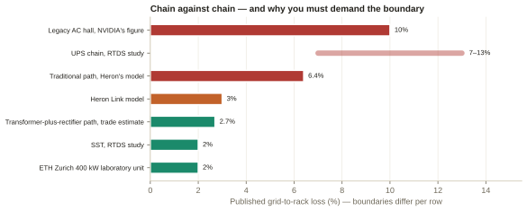
megmeet-sst-briefing-data.json → chains.publishedChains, where every row carries its own source tag.61The practical consequence is the question to have ready when a buyer’s engineer quotes a competitor’s efficiency at you: which boundary, and which load point?62 The chart shows why in one picture. The bottom rows are single-converter numbers and the top rows are whole-chain numbers, so they are not the same quantity at all — and the spread between the two kinds is wider than the margin any vendor claims over any other.A
This part of the August 2026 paper was in nobody’s curriculum, and it will be the vocabulary of every engineering conversation about 800 V DC for the next two years.
| Topic | What is specified |
|---|---|
| AC against DC faults | DC current flows continuously and never crosses zero, so it needs faster interruption, current limiting and arc-fault detection — but fault energy is “often lower in converter-limited systems”. A series arc (one in line with the load, as at a loose connector) can sustain itself on DC and is harder to extinguish, which makes connector design and arc detection critical. The counter-intuitive teaching point is that DC’s weakness comes with a structural strength: a converter-fed system can limit fault current at the source, which a stiff AC utility feed cannot.63 |
| Grounding | 800 V DC distribution is two-wire: positive and return. Four grounding candidates are under evaluation — high-resistance midpoint, high-resistance return, floating and solid — and the paper leans towards HRMG, which “provides a more uniform fault monitoring, earlier fault identification, and improved system reliability while maintaining low ground-fault current levels”. The final choice is deferred to system-level studies.44 |
| Protection zones | There are two. The Facility Distribution Zone runs from the TRU or SST output to the tap-can input. It is qualified-personnel territory, uses continuous insulation monitoring that raises an alarm without shutting down, and on a high overcurrent it coordinates a fast shutdown of the source through the rectifiers. The Rack Interface Zone runs from the tap can to the compute rack. It sees the most human interaction, prefers residual current monitoring, and keeps the 125 A whip de-energised while it is being installed or removed.45 |
| Breakers | Two target ratings for solid-state breakers: 125 A air-cooled for the shelves that convert 800 V to 54 V, and 1,250 A, likely liquid-cooled, for future racks that take 800 V DC natively. The sober counterweight is that MCCBs remain the primary Day-1 branch device, because they are available, their supply chain exists and certifiers know them.64 Siemens data at a 200 A/µs rise rate: a fuse peaks near 9.4 kA at about 3 ms; a thermal-magnetic breaker peaks near 5.7 kA and clears in 6–7 ms; a hybrid breaker clears in about 2.5 ms; and an SSCB holds the current near zero within about 1 ms. These values are read from a chart image, so treat them as right in shape rather than datasheet-exact.65 |
| Power smoothing | Smoothing moves to the rack side: “localized peak shaving, power smoothing, and slew rate control using minimal energy storage (e.g., electrolytic capacitors) deployed within or near the compute racks”, with facility or behind-the-meter storage only as a may. The 1,200 J in each Option A power supply is that philosophy in hardware.66 For Vera Rubin, NVIDIA publishes 400 J of capacitor storage per GPU, “6× more rack-level energy storage” than the prior generation, Intelligent Power Smoothing, and dynamic power steering.1 |
| Certification | System-level requirements come first: “equipment certification alone is insufficient”. The work runs across eight workstreams, from power quality to end-to-end stability criteria, with UL Solutions, and leans on existing frameworks rather than writing new standards. It also explicitly enables the AHJ (the authority having jurisdiction — the local inspector who approves the build) through installation practices, inspection guidelines, commissioning procedures and training.67 |
Two things, both material and both dated after 12 September. First, NVIDIA DSX Ready launched on 21 September 2026 as the first published qualification programme for partner power products.1 It covers battery storage and coolant distribution units only, with no MV-conversion category and no timeline for one.1 Second, the first published NVIDIA-aligned end-to-end electrical reference design for Vera Rubin — from Siemens with NVIDIA, Fluence and nVent, dated 1 June 2026 — is built on a nominal 34.5 kV utility connection through medium-voltage distribution and modular low-voltage power blocks.1 It is sized at 136 MW facility and 100 MW IT capacity and delivered as pre-engineered, prefabricated, factory-tested MV and LV skids, UL-aligned and targeting Tier III concurrent maintainability (the Uptime Institute tier at which any component can be maintained without shutting down the load).1 That release mentions neither 800 V DC nor solid-state transformers anywhere.1
Read together, the two make the near-term shape of the market clear. The first industrialised NVIDIA-aligned electrical design is a conventional building that steps MV AC down to LV AC, and the first qualification programme has no box for your product. Both are commercial openings rather than closures: a factory-tested skid is exactly where an SST wants to land, and Tier III concurrent maintainability is a hard constraint that rewards a converter with a real bypass story. But anyone who walks in claiming NVIDIA’s architecture requires an SST today will be corrected by NVIDIA’s own reference design.
Extends the primer’s chapter 2.2 (NVIDIA’s copper and staging argument) and chapter 7 (the vendors’ positions). The primer gives one perspective properly, NVIDIA’s, and describes the vendors’ positions. It does not give the buyer-side view from ten different chairs. Each of these players wants something different from 800 V DC, and only three of them want an SST specifically. Where a player has said something, the cell is sourced. Where it has not, the cell is labelled analysis, because inferring a position and then quoting it back as if the player had said it is exactly the error this document exists to prevent.
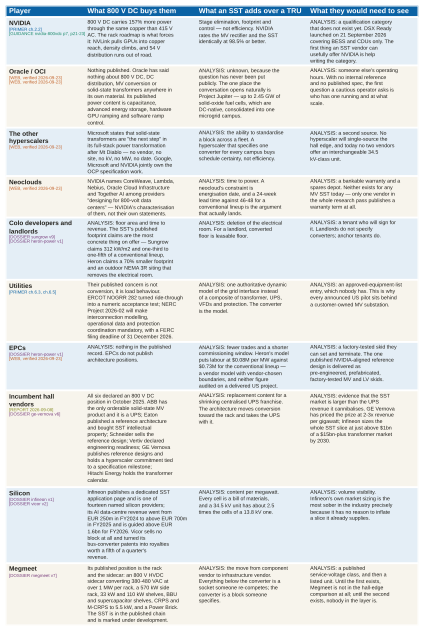
megmeet-sst-briefing-data.json → perspectives, where each row carries its own tier tag.NVIDIA does not buy power. It sets the architecture and lets the ecosystem carry the risk, which is why its published documents give ratings, interfaces and dates but no commercial terms. What it needs from an SST vendor is help writing a qualification category that does not yet exist.1
Oracle has published nothing on power conversion at all.1 Its single engineering post on AI power is a one-minute read whose entire power content is “capacitance, advanced energy storage solutions, hardware-accelerated GPU ramping techniques, and software-based ramp control algorithms” — no voltage, no rack density, no topology.1 Chapter 8 takes this apart properly. The point here is that with OCI (Oracle Cloud Infrastructure) you are not responding to a specification; you are helping to write one.
Utilities are not asking about conversion. Their published concern is how a large load behaves on the grid, and that concern has become numeric.1 ERCOT’s NOGRR 282 is now an acceptance test, and NERC (the North American Electric Reliability Corporation) Project 2026-02 will make interconnection modelling, operational data and protection coordination mandatory, against a deadline of 31 December 2026 for filing with FERC, the federal regulator.1 This is the one place where an SST has a structural advantage that nothing else in the chain can match: the converter is the model, because its behaviour is set by its control software and can be specified in advance.23
The incumbents are all running the same hedge. All six declared an 800 V DC position in October 2025, and every one of them has deferred the converter while buying or building the equipment around it.69
SSTs are marketed against transformer lead times, but the market’s binding constraints are the interconnection queue and the lack of a validated method for calculating DC arc flash — and an SST relieves neither. The argument that actually holds is the regulatory one: an SST is the only architecture that makes a gigawatt-class load a modelable, dispatchable, ride-through-compliant grid citizen, at the exact moment FERC and NERC are making that mandatory. Everything else in the story is either years out or belongs to the transformer-rectifier unit, which NVIDIA itself calls the faster and proven path.70
Extends the primer’s chapter 5 (overload, faults, insulation, reliability, cost and standards) and chapter 6 (grid, supply chain, ride-through, codes, sites, economics). The primer describes the limitations. It does not name, for each one, who is actually working on it and how far they have got — and for a whole family of them the answer is “nobody”. That is the finding of this chapter and of chapter 7, which takes the same table and reads it as an adoption question rather than an engineering one.
The status word comes from the fixed set and is assigned from evidence, not from vendor language:
The full twenty-five-row table is in chapter 7. This chapter takes the four limitations intrinsic to the converter: the ones a customer’s engineer raises in the first meeting, in the order they raise them.
A liquid-filled 60 Hz transformer tolerates 200% load for 30 minutes because tonnes of oil and iron take time to heat up.11 A data hall uses that margin every time a row steps from idle to full load, and every time a fault draws current until a breaker clears.11 An SST’s silicon has only microseconds of thermal margin, so its surge tolerance shrinks to brief transients and its continuous rating sits near 1.0–1.2× nameplate.11 No first-party SST vendor publishes an overload curve, and no named body owns the gap as a published rating.11 Status: unsolved as a rating, product as a design property vendors assert. In practice, an SST is sized for its peak load rather than its average, and storage on the DC bus — which NVIDIA already requires for the GPUs’ power swings — becomes part of the overload strategy rather than an option.11
ORNL’s 2026 review is blunt: MV-SSTs “exhibit limited fault withstand capability … unlike conventional transformers, which benefit from substantial thermal and magnetic fault tolerance, MV-SSTs must actively detect, limit, and interrupt fault currents within timescales compatible with semiconductor safe-operating limits”.19 On the DC side the problem is the energy stored in capacitors, because every converter on a shared bus has them and they all discharge into a fault.19 Siemens measured it: on a common 800 V bus, a fault in one load drew discharge current from the capacitors of all three healthy loads, clearing with fuses took about 20 ms, and interruption at a 200 A/µs rise rate “was only possible with solid-state circuit breakers; other devices were not able to react fast enough”.19 Here the owners are named: ABB claims the first fully IEC-certified solid-state circuit breaker in production, and Eaton has published a 1,500 V / 1,250 A hybrid SSCB.1 Status: product at the device, pilot for the complete balance of system of an 800 V DC hall.
The medium-frequency transformer must hold medium-voltage insulation in a small volume while being driven by PWM square waves with very fast edges.20 TDK calls this “the biggest challenge”, needing “three times the insulation”: a 35 kV interface requires roughly 100 kV.20 ORNL identifies two distinct stresses, and the first is insulation coordination under IEEE C62.82.1, a framework written for iron, where “localized insulation overstress may occur even when terminal-level clamping appears adequate”.20 The second is stress the converter itself creates: fast dv/dt makes the sharing of voltage across the insulation “dominated by parasitic capacitances” and drives partial discharge that shortens insulation life.20 There is a named academic owner: a Georgia Tech group identifies a mismatch between the protective levels of metal-oxide varistors (the surge arresters that clamp overvoltage) and the insulation strength of an SST, and “the incompatibility of standard impulse test on SST protective structures” — in plain terms, the standard BIL test does not apply cleanly to an SST.1 Status: lab.
A 4 MW SST contains on the order of a hundred or more SiC modules plus their capacitors, drivers and sensors, and it must deliver a 20-year life at 99.9–99.999% availability.42 The modular design gives inherent redundancy, and vendors design for it: Heron tolerates two cell failures per phase, with bypass in less than one AC cycle.5 But ORNL flags a problem specific to wide-bandgap devices: a series-stacked design needs a failed die to fail short and keep conducting for months; press-pack silicon achieves this, while SiC’s thermal stability, small die area and short short-circuit withstand make it “an open research challenge”.42 Status: pilot at the system, unsolved at the die. And there is arithmetic nobody advertises: the one independent figure available says N+1 redundancy raises a modular multilevel drive’s MTBF by a factor of about 1.7 — a long way from the step change that “five nines” (99.999% availability) implies.1
There are five genuine advantages. It is worth being precise about them, because three of the five are commonly overstated.
NVIDIA’s headline numbers — up to 5% better end-to-end efficiency, 45% less copper, 85% more power through the same conductor, up to 70% lower maintenance and up to 30% lower TCO (total cost of ownership) — are claims for the 800 V DC architecture against a legacy AC hall, whose end-to-end efficiency NVIDIA puts at “less than 90%”.62 They are not claims for the SST against the MV rectifier, which NVIDIA rates at the same 98.5%.62 In NVIDIA’s own framing, the SST’s advantages are stage elimination, footprint and control.62 Saying “an SST is 5% more efficient” is the single most common error in this market, and it is wrong in two ways at once: the 5% belongs to the architecture, not the converter, and it is measured against an AC hall, not against a rectifier.A
Extends the primer’s chapter 6.1 (the US voltage ladder), chapter 7 (the players) and figure 11. The primer explains why the service class sets the product. This chapter answers the question it leaves open: who has actually shown what, at which class, and how far the evidence goes. It then makes the 34.5 kV argument in cells, magnetics and BIL rather than in adjectives.
The table lists every vendor with a published medium-voltage position, sorted by the highest class claimed; n/d means not disclosed. The evidence tier comes from the strongest public evidence located, not from the vendor’s own language. The last column says exactly what the class rests on, because the difference between a datasheet, a product page and a range on a marketing banner is the whole subject of this chapter.
| Vendor | MV class | Rating | Output | Evidence | What the class rests on |
|---|---|---|---|---|---|
| Novos Power | 13–48 kV | 10 MW | 400–1,500 V DC (claimed) | announced | stated three ways (13-48 kV on the site, 35 kV in a July 2026 post); 48 kV is above the 38 kV ceiling of UL 287728 |
| Siemens + Reinhausen | 34.5–36 kV | n/d | 800 V DC | announced | "up to 36 kV" — 36 kV is the IEC class containing 34.5 kV; no MW rating, no date1 |
| Delta Electronics | 6.6–35 kV | n/d | 800 V DC | widest published incumbent range; Delta states "dozens of units in Asia, customer pilots underway in the US" — a vendor claim relayed by trade press1 | |
| Heron Power | 34.5 kV | 4.2 MW | 800 V DC | announced | 34.5 kV is the headline spec, not a range; 4.2 MW is the data-centre configuration (5 MW is the solar/storage configuration of the same platform)5 |
| SolarEdge | 13.8–34.5 kV | 5 MW | 800–1,500 V DC | announced | 2–5 MW modular, Infineon SiC, >99% claimed; customer testing targeted 20271 |
| Enphase | 13.8–34.5 kV | 1.25 MW | 800 V (±400 V) DC | announced | distributed architecture: 342 × 4 kW modules built on gallium nitride (GaN), another wide-bandgap semiconductor, per 1.25 MW rack; demo late 2026, pilots 2027, volume 20281 |
| DG Matrix (Cell-MV, roadmap) | 12–34.5 kV | 15 MW | 800 V DC — the MV unit is unshipped | announced | the 15 MW is a marketing rating for an unshipped unit; the CFO deck dates the multi-port MV SST to "2028+"6 |
| ABB (HiPerGuard, MV UPS) | 4.16–34.5 kV | 2.5 MW | MEDIUM-VOLTAGE AC — a UPS, not a converter | output is medium-voltage AC — it is a UPS, not an MV-to-800 V DC converter. Plotted because it is the only orderable solid-state MV product7 | |
| Hyosung | 22.9 kV | 1.05 MW | undisclosed | lab demo | 22.9 kV is a Korean class; the nearest US analogue is 24.9 kV, not 34.5 kV1 |
| Eaton (Resilient Power) | 12.47–15 kV | 2 MW | 800 V DC (trade press) | announced | "2 MW, 15 kV class" is trade-press only; eaton.com returned HTTP 503 to the research pass, so no vendor spec sheet was obtained1 |
| Sungrow (EnerNeo) | 10–13.8 kV | 3 MW | 800 V DC | the only unit a filing describes as supplying the market — and it stops at 13.8 kV3 | |
| ETH Zurich (research) | 13.2 kV | 0.4 MW | 800 V DC | lab demo | 400 kW at 98% measured — the best-instrumented efficiency figure in the set, and it is a laboratory unit1 |
| NC State / NYPA / EPRI (1 MVA research unit) | 13.2 kV | 1 MW | 13.2 kV AC feeder, 1 MVA | field pilot | the only independently validated megawatt-class SST on a live US distribution feeder: 15 kV SiC MOSFETs, three days supplying an EV load, reactive power injected, energised more than ten times, June 202621 |
| Alderbuck Energy | 12 kV | n/d | 800 V DC | factory test | the only named US AI-compute site with a disclosed class attached to an SST — San Diego Supercomputer Center, host utility San Diego Gas & Electric (SDG&E), funded by the California Energy Commission (CEC). It is 12 kV1 |
| Zhonhen (Panama) | 10 kV | 2.5 MW | 240 / 400 / 800 V DC | a transformer-rectifier architecture, not an SST; plotted because buyers place it against SSTs71 | |
| JST Power Equipment | 10 kV | 2.4 MW | 800 V DC | factory test | 10 kV is a China class1 |
| EPFL + Navitas | 3.3 kV | 0.25 MW | 800 V DC → 12 V | lab demo | 3.3 kV is not a US service class at all1 |
| Megmeet | undisclosed | — | — | undisclosed | The SST is described only as "grid HV input to 800 V DC". Across the 38 sources pinned in dossier v7 the string "kV" does not appear once.8 A four-filing text scan of the FY2025 annual report, the H1 2026 interim and two investor-relations records found zero hits for kV, 千伏 or 中压.1 |
| Amperesand | undisclosed | — | — | undisclosed | No kV figure appears anywhere on the company's own site — "configurable MV AC and LV DC" only. The 10-34.5 kV figure in September 2026 reporting is third-party. Job postings cite "medium-voltage (5 kV to 36 kV) systems".72 |
| GE Vernova | undisclosed | — | — | undisclosed | Reference designs cite 13.8 kV AC to 800 V DC at the perimeter, but no SST product class, rating or date is published. A first delivery to an unnamed hyperscaler was stated for fall 2026.73 |
| Hitachi Energy | undisclosed | — | — | undisclosed | No SST product is named at all. Its engineers are separately quoted cautioning that compact 34.5 kV designs present significant design challenges.74 |
| Vertiv | undisclosed | — | — | undisclosed | 34.5 kV to 800 V DC at 3-5 MW is stated by an engineering director as a goal, not a product. The shipping sidecar is 400-900 kW and is not an SST.1 |
| Schneider Electric | undisclosed | — | — | undisclosed | No MV SST programme was found in the pinned sources. The 1.2 MW/rack 800 V DC sidecar was still a prototype at GTC 2026 with no commercial date.75 |
| Sinexcel | undisclosed | — | — | undisclosed | Management states four times that the AIDC critical-power products are samples in development with formal sales not yet realised; the string "800V" does not appear in its 212-page interim.76 |
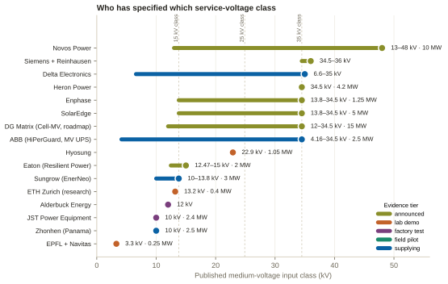
megmeet-sst-briefing-data.json → classLedger, where every row carries its own source tag.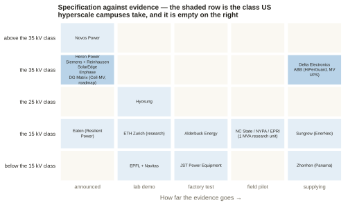
classLedger.Every count below is read off figure M7, whose rows carry their own tiers in the ledger above. The 35 kV row is the class large US campuses actually take. It holds five vendors under “announced” and two under “supplying”, and the two under “supplying” are Delta, whose shipped units are in Asia on the vendor’s own claim, and ABB, whose product is a UPS. The three middle columns of that row are empty: there is no 34.5 kV-class solid-state transformer anywhere in the world at lab demo, factory test or field pilot.
US utilities serve large customers at 12.47, 13.2 or 13.8 kV — the ANSI C84.1 15 kV class — or at 24.9 kV or 34.5 kV, while gigawatt campuses interconnect at 69–345 kV through their own substations.47 Large greenfield campuses in Texas and the Southeast trend to 34.5 kV because it moves more power on fewer, smaller feeders, and Northern Virginia campuses run 34.5 kV distribution behind 230 kV ties.4
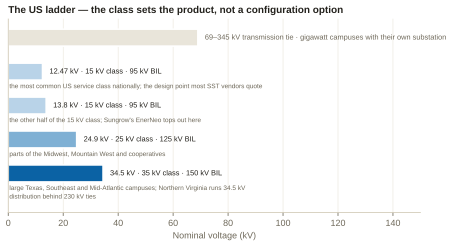
megmeet-sst-briefing-data.json → classCost.classes.Each cell can hold only so much of the line, so a cascaded-H-bridge SST’s cell count scales roughly linearly with its input voltage, and the step from the 15 kV class to the 35 kV class multiplies cells, medium-frequency transformers, gate drivers and control channels by roughly 2.5×.4 The counts computed on the primer’s own assumptions bracket that figure rather than land on it: 13.8 → 34.5 kV is 15 → 35 cells, a 2.3× step, and 12.47 → 34.5 kV is 13 → 35, a 2.7× step.A The primer’s 2.5× is the round number for the class step; the two exact ratios are what a bill of materials actually moves by. That is the whole argument, and it is worth seeing as a count rather than a multiplier.A
The assumptions are the ones in the caption below. A 1.7 kV device, derated to 0.55 of its rating for cosmic-ray safety, holds about 0.935 kV per cell. A 34.5 kV line has a phase peak of 34.5 × √2 ÷ √3 ≈ 28.2 kV, and allowing 10% grid overvoltage raises that to about 31.0 kV. Dividing 31.0 kV by 0.935 kV gives 33.1, which rounds up to 34 cells, and one redundant cell makes 35 per phase. The same steps give 15 cells for 13.8 kV and 13 for 12.47 kV. Change the device to 3.3 kV and each cell holds nearly twice as much, which is why the count roughly halves.
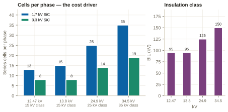
With 1.7 kV devices, a 12.47 kV design needs about 13 cells per phase and a 34.5 kV design about 35: a 2.7× step in cells, and therefore in capacitor banks, magnetics, gate drivers, sensors and failure points.A Moving to 3.3 kV devices roughly halves both counts, which is precisely why Amperesand builds its front end on 3.3 kV silicon-carbide modules.72 On top of the count, the insulation class steps from 95 kV BIL to 150 kV, and a 35 kV interface needs roughly 100 kV of insulation inside the medium-frequency transformer itself.20
345 kV is not 34.5 kV. Abilene’s Oncor interconnection is 345 kV transmission, and the campus distribution class is undisclosed.1 One misplaced decimal point turns a transmission fact into a fabricated service-class finding, and it is the single most likely error to creep into this material.
The only named US AI-compute site with a disclosed class attached to an SST is at 12 kV, not 34.5 kV.1 It is Alderbuck Energy’s unit for the San Diego Supercomputer Center, hosted by San Diego Gas & Electric and funded by the California Energy Commission, announced on 23 June 2026, and it has still to pass factory test and lab validation before installation.1
Not everyone agrees 34.5 kV is ready. Hitachi Energy, the incumbent with the deepest manufacturing base in MV transformers, is quoted urging caution specifically on compact 34.5 kV designs, on grounds of insulation and manufacturability, and saying the technology “is not fully mature for every use case”.1 That is a trade-press paraphrase rather than a Hitachi release, but it is the most interesting single datapoint on the question: the company that would have to build the magnetics is the sceptic.
The strongest field evidence in the world is a research unit. A 1 MW solid-state transformer designed and built at NC State was tested on a real distribution feeder at EPRI’s power-delivery laboratory in Lenox, Massachusetts.1 The work, announced on 18 August 2026 and funded by the New York Power Authority and a DOE award, is claimed as “the first independently verified, megawatt-class solid state transformer validated on a live utility distribution feeder”.1 The primer gives its class: a 1 MVA unit on a 13.2 kV feeder — the 15 kV class — using 15 kV SiC MOSFETs, run over three days supplying an EV load and energised more than ten times in June 2026.21 It therefore belongs in the ledger proper rather than among the undisclosed, and it is the only field pilot in the table.A
The largest committed volumes are all at the low class. Sungrow’s EnerNeo carries framework purchase agreements with HEC Technology for 30 MW across 2026–27 and with ZDATA for 100 MW, with a demonstration expected at the end of 2026 and deliveries in 2027–28 — and the product is specified at 10 kV to 13.8 kV.3
No SST has been shown to be energised at a named hyperscaler site.1 Microsoft states that solid-state transformers are “the next step” in its power transformation after Mt Diablo, naming no vendor, no site, no kV, no MW and no date.1 GE Vernova stated in April 2026 that a first product would be delivered to an unnamed hyperscaler in the autumn of 2026, followed by about six months of testing, and as of 23 September that delivery has not been reported.1 Everything else at hyperscaler scale is ecosystem membership or an unnamed counterparty.
Three facts, held together, define the commercial reality of this layer. The most commercially advanced SST in the world cannot serve the class that US hyperscale campuses take. The best-evidenced megawatt-class unit anywhere is a university research project. And the only named US site with a disclosed class is at 12 kV. A vendor arriving with a credible 34.5 kV-class product and a witnessed first article would not be joining a crowded field; it would be the first entrant in an empty one. That is the opportunity and the risk in one sentence, because being first also means being the vendor who discovers what the standards bodies have not yet written.
Extends the primer’s chapter 5 (technical) and chapter 6 (grid, supply chain, ride-through, codes, sites, economics). The primer’s thin spot is operations and maintenance (O&M): it mentions “maintenance” once and spares, MTBF or technicians not at all. This chapter fills that gap and puts every obstacle in one table, each with a named owner and a status word. The finding is the empty column: of twenty-five obstacles, ten sit at unsolved, and eight of those ten name no owner at all — four of the eight in operations and maintenance, two in utility acceptance, one in policy, and only one technical. (The tenth unsolved row, the interconnection queue, does name an owner: FERC. It is unsolved because no converter can shorten it.)
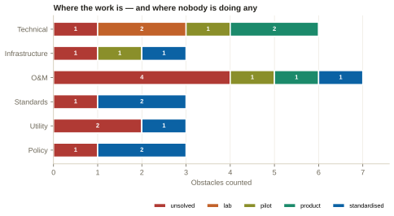
megmeet-sst-briefing-data.json → obstacles, where every row carries its own source tag.| Obstacle | The mechanism | Who is doing what about it | Status |
|---|---|---|---|
| Technical | |||
| Overload / short-time rating | An oil transformer carries 150-200% of rated kVA for minutes on thermal mass alone; a converter's overload is bounded by junction temperature and must be bought as silicon. No first-party SST vendor publishes an overload curve. | Nobody owns it as a published rating.11 Vendors claim thermal margin as a design property.1 | unsolved |
| Inrush | No magnetising inrush, so no reactive-power step at close-in. | This one goes the SST's way — energisation is a power-electronics soft start.1 | product |
| DC fault current, no natural zero crossing | DC-link capacitors discharge into a fault at 200 A/us; Siemens measured that interruption at that rise rate "was only possible with solid-state circuit breakers". Fused clearing took about 20 ms. | ABB (claims the first fully IEC-certified SSCB in production); Eaton (1500 V / 1250 A hybrid SSCB).1 | product |
| SiC cosmic-ray single-event burnout and derating | Atmospheric neutrons cause burnout at 50% or less of rated breakdown, so MV cells must be derated — which is where the 0.55 factor in the cell-count arithmetic comes from. | NASA NEPP on the device physics; device vendors on the FIT budget (failures in time, counted per billion device-hours).1 | lab |
| Cell failure, redundancy and bypass | ORNL: series-stacked designs need a failed die to fail short and keep conducting for months. Press-pack silicon does; SiC's thermal stability, small die area and short short-circuit withstand make it "an open research challenge". | Heron (two cell failures per phase, sub-cycle bypass); Amperesand (proprietary redundancy); ORNL flags the open problem.42 | pilot |
| Insulation coordination and partial discharge | Georgia Tech identify the mismatch between the protective levels of metal-oxide varistors (MOVs) and SST insulation strength, and "the incompatibility of standard impulse test on SST protective structures" — the standard BIL test does not apply cleanly to an SST. | Georgia Tech (Divan, Graber et al.).1 NC State on BIL; MFT insulation is an active academic area.20 | lab |
| Infrastructure | |||
| Interconnection queue and transmission build | ERCOT: about 410 GW queued against 9.0 GW approved to energise and a 3.9 GW observed large-load peak. 888 miles of 345 kV-and-above built in a year against a benchmark near 5,000. | FERC (RM26-4-000); nobody can shorten it with power electronics.4 | unsolved |
| Transformer and switchgear lead times | Standard units about 128 weeks, generator step-ups about 144, worst cases near four years. One flagship US plant at 57 units a year is about 6% of national demand, arriving 2027. | Hitachi Energy, Siemens Energy, GE Vernova/Prolec — all building capacity, all arriving late.22 | pilot |
| Ride-through and large-load standards | This is the one constraint an SST genuinely relieves: a converter-fronted load is the only kind that can be programmed to a curve and modelled as one device. | NERC Project 2026-02 (CLO-001/002/003); FERC deadline 31 December 2026; ERCOT NOGRR 282 already numeric.1 | standardised |
| O&M | |||
| Mean time to repair and hot-swap | The swap-in-minutes claim is not novel to SSTs — GE Vernova markets the same property for its MM7 modular multilevel drive, which has two decades of field service behind it. | Amperesand claims a power stage swaps in under 20 minutes, two people with a lift. The claim is published in a case study by the company that sells it the silicon.1 | product |
| MTBF or FIT for a complete MV converter | The one independent number available: N+1 raises the MTBF of a modular multilevel drive by a factor of about 1.7 — a long way from the step change implied by "five nines". | Nobody. No vendor publishes one.1 | unsolved |
| Service life against an oil transformer | The published SST design target found is "15+ years". An oil transformer is financed against 30-40. The owner is buying a mid-life silicon replacement into the capital plan, and nobody has costed it. | Nobody. No standards body has set a life class for an MV SST.1 | unsolved |
| Spares strategy, spares cost and warranty | An oil transformer's spares strategy is a bushing and a fan. A several-hundred-module SST's spares strategy is an inventory of power electronics with its own obsolescence clock. | Nobody, with one exception: Enphase publishes 10% module redundancy and a 10-year limited warranty.1 | unsolved |
| Part-load efficiency | Every efficiency figure in the market — 98%, >98.5%, 98.5-99% — is a peak or nominal number. A data hall does not run at rated load. | Nobody publishes a curve.A | unsolved |
| Firmware update and cyber exposure | A companion FCC waiver preserves qualifying firmware updates on already-authorised covered devices only through at least 1 January 2029 — the right to patch is now a time-limited regulatory grant. Whether NERC CIP, NERC’s cyber-security standards, attaches to a behind-the-meter hall-edge SST is unaddressed anywhere. | ISA/IEC 62443 as the framework; the FCC as the unexpected regulator of the update channel itself.1 | standardised |
| Technicians | A reported shortfall of more than 300,000 electricians against roughly 20,000 retiring a year; an apprentice starting a five-year programme with the IBEW (the electricians’ union) in 2025 qualifies in 2030. | Google/NECA/Electrical Training Alliance are funding training; the arithmetic does not close on the relevant timescale.1 | pilot |
| Standards | |||
| DC arc-flash incident-energy model | NFPA 70E 2027 adds a new Article 310 naming DC thresholds; the calculation method is aimed at 2030. The hazard is named three years before the method exists. | NFPA Fire Protection Research Foundation — project open, seeking $3-4M, results aimed at NFPA 70E 2030.1 | unsolved |
| Listing of an MV power-conversion unit | The envelope exists. What does not exist is a listed data-centre SST: no vendor had completed UL certification for data-centre SST deployment as of May 2026, per an analyst house that sells the newsletter the claim appears in. | UL (1741 +SA/SB, 347A, 2877); IEC SC 22E for 62477-2 Edition 2, CDV vote closed 2026-03-13.1 | standardised |
| The 800 V DC specification itself | This is the vocabulary a buyer's engineer will use. The specification document itself could not be retrieved in this run — opencompute.org returned HTTP 403 to every attempt. | OCP — Google, Microsoft and NVIDIA. LVDC Solid-State Transformer Specification v0.3, July 2026; more than 80 manufacturers building to it.1 | standardised |
| Utility | |||
| Acceptance of a converter at the service point | NOGRR 282 is now a numeric test: ride through 2 s at 0.85 pu and 150 ms below 0.35 pu, draw no more than 150% current, recover to 90% of consumption within 2 s, survive six sags in 90 s. | ERCOT and the PUCT, Texas’s utility regulator (NOGRR 282; 16 TAC 25.194, Project 58481); NERC Project 2026-02.1 | standardised |
| Approved-equipment-list qualification | At 12.47-34.5 kV the service transformer is commonly utility-owned. An SST displacing it must be accepted onto a utility's approved-equipment list — a multi-year qualification with no visible US precedent, which is why every announced US pilot sits behind a customer-owned MV substation. | Nobody visible. No covered vendor discloses a US utility qualification.48 | unsolved |
| MV equipment inside an operating data hall | An SST terminating 34.5 kV at the row turns white space into MV-classified space, with vault, access, ventilation and qualified-person rules. Probably the largest permitting unknown for facility-level SSTs. | Nobody. No US AHJ precedent was located.49 | unsolved |
| Policy | |||
| FCC Covered List | Two prongs, both required: a bidirectional AC-DC converter, and components enabling remote communication. No voltage or power threshold. "Foreign-produced" is the Buy American content test at 48 CFR 25.101(a), not a nationality test — so a US-headquartered vendor building offshore is captured. | FCC Public Safety and Homeland Security Bureau (DA 26-786, 28 July 2026); DoW/DHS conditional approval, applications due 1 January 2028.1 | standardised |
| Executive Order 14421 | Signed 26 August 2026. Covers transformers, inverters, breakers, turbines and storage — but applies at 69 kV and above and excludes local distribution. A 34.5 kV hall-edge SST is probably outside it and inside the FCC list. | DOE — implementing regulations due 24 December 2026, recommendations for the Federal Acquisition Regulation (FAR) due 22 February 2027.1 | standardised |
| Insurance and bankability of a novel MV asset | No insurer, reinsurer, broker or owner's-engineer standard naming solid-state transformers was found. For a first-of-a-kind MV asset this is the largest single information gap on the commercial side. | Nobody visible.A | unsolved |
There is no field-service record for medium-voltage solid-state transformers, because there is no installed base. Every serviceability figure in this section is either a vendor’s design claim about a product not yet shipped at scale, or borrowed from the nearest analogue with real field history: the cell-based MV drive, serviced by manufacturers’ field engineers for two decades. The honest position is that the O&M model is asserted, not demonstrated, and holding that distinction in a customer meeting is worth more than any of the individual claims.1
Mean time to repair. The most concrete claim available is Amperesand’s: a power stage “can be swapped out in less than 20 minutes”, with modules “small and light enough for simple two-person replacement in minutes, using readily available lifts”. It is published in a case study by Wolfspeed, which supplies the silicon carbide inside the product, so both parties gain from the claim.1 Put it next to GE Vernova, which markets the identical property for its MM7 modular multilevel drive — modules “light enough for one or two people to swap a faulty unit with a spare within a few minutes” — and swap-in-minutes turns out to be established MV-drive practice, not an SST innovation.1
Reliability arithmetic. No MV SST vendor publishes an MTBF or FIT number for the complete converter. Every reliability statement located is either qualitative, such as “five nines” or “excellent cosmic ray performance”, or a manufacturing metric such as Enphase’s 500 defects per million shipped.1 That is a production-quality figure, and it must never be relayed as a field reliability rate.1 The one independent number available says N+1 redundancy raises a modular multilevel drive’s MTBF by a factor of about 1.7, and the same source warns that “extreme care should be taken when using these figures to compare vendors”.1 The source is a drives consultancy with an interest in arguing that vendor numbers are incomparable, but its conclusion happens to be defensible.1
Service life. The published SST design target located is a “15+ year lifetime”, while a large oil-filled transformer is specified and financed against a service life several times that.1 No standards body has defined a life class for an MV SST, and no vendor publishes an end-of-life or mid-life refresh plan.1 So an owner buying an SST is also buying a mid-life replacement of its silicon into the capital plan, and nobody found has costed it.1
Warranty and spares. Exactly one warranty term was located across the entire research pass: Enphase’s 10-year limited warranty on the IQ SST.1 No warranty, service-contract structure, response-time commitment or availability guarantee was published by Eaton, ABB, Hitachi Energy, Amperesand, DG Matrix or Heron Power in anything reachable.1 Nor does any vendor publish a spares list, a recommended stocking level or a spare-cell price.1 The structural point is worth carrying into a meeting: an oil transformer’s spares strategy is a bushing and a fan, while the spares strategy for an SST of several hundred modules is an inventory of power electronics with its own obsolescence clock.
Firmware and cyber: a transformer that takes software updates. The frameworks exist, but no profile specific to MV SSTs does: ISA/IEC 62443 is the product-side security standard for operational technology (OT), and vendor platforms already collect access, configuration and firmware events so they can be monitored against NERC CIP and IEC 62443-3-3.1 The regulatory teeth arrived from an unexpected direction. The national-security rationale the FCC stated for its July 2026 action is precisely the firmware-update channel, and the companion waiver preserves qualifying Class I and Class II software and firmware updates on already-authorised covered devices only through at least 1 January 2029.1 The right to patch a covered device is now a time-limited regulatory grant, not a vendor decision.1 Whether NERC CIP attaches to a behind-the-meter hall-edge SST is addressed by no source located, and it is an open question.1
Technicians. The United States is reported to need more than 300,000 additional electricians while roughly 20,000 retire every year, and medium-voltage scope and switchgear commissioning are named as the specific skills moving into the data-centre footprint.1 The figure is widely repeated, but it comes from a trade careers source and does not trace to a primary one.1 Google is funding training with NECA (the National Electrical Contractors Association) and the Electrical Training Alliance, and the same source makes the honest point about it: a four-week credential is not a four-year apprenticeship, and an apprentice who started a five-year IBEW programme in early 2025 qualifies in 2030.1
The clearest single finding in the standards picture is a gap in timing. NFPA 70E 2027 adds a new Article 310 for DC hazards with explicit thresholds: contact-thermal at a power of 1,000 W or more; shock at 100 V DC or more and above 40 mA; and arc flash above 150 V DC and above 1.2 cal/cm² (calories per square centimetre, the unit of incident energy on skin).1 An 800 V DC hall bus is over every one of them.1 Meanwhile the NFPA Fire Protection Research Foundation’s project to develop a DC arc-flash hazard model was, in February 2026, still seeking sponsors at an estimated $3–4 million, with results aimed at the 2030 edition of 70E.1 So the hazard is named in 2027 and the method for calculating it arrives in 2030 at the earliest. In between, operators energise 800 V DC busway using conservative table-based PPE (personal protective equipment), rules for working de-energised, and negotiation project by project with the authority having jurisdiction.49
The listing envelope itself exists. UL 1741, with supplements SA and SB, is the dominant US route, and medium-voltage considerations were brought into it by revision; UL 347A and UL 2877 cover MV power conversion from 1 kV up to 38 kV, which puts the 34.5 kV hall-edge case inside them.1 Internationally, IEC 62477-2 covers converters from 1 kV AC / 1.5 kV DC up to 36 kV AC / 54 kV DC, and Edition 2 went to a committee draft for vote that closed on 13 March 2026.1 NEC 2026, the US National Electrical Code, adds a new Article 270 for medium-voltage grounding and bonding above 1,000 V AC, which matters precisely because SSTs push medium voltage into the building footprint.1
“Currently, we don’t have a specification, and currently we don’t have a UL certification for the 800-VDC bus. That is a major gap.”1 A related point carries as much weight: the server ecosystem was built around the SELV (safety extra-low voltage) classification for circuits below 60 V, so creepage and clearance at 800 V — the insulating distances along surfaces and through air between conductors — are unresolved in existing designs.1
Eighteen months ago the question was whether a utility would accept a converter at the service point. Now it is whether any large load can prove that it rides through — and a converter is the easiest thing to prove it with. The driver is not specific to SSTs; it is the load-loss events.1
What has not changed is the approved-equipment question. At 12.47–34.5 kV the service transformer is commonly owned by the utility, and an SST displacing it must be accepted onto the utility’s approved-equipment list — a multi-year qualification with no visible US precedent.48 That is why every announced US SST pilot sits behind a medium-voltage substation that the customer owns.48
These are worth stating plainly, because each is a question a careful buyer asks and no vendor can currently answer.
The technical obstacles all have named owners, and most are at product or standardised. The operational ones mostly have nobody. That inverts the usual assumption about where a challenger has room: the engineering is crowded and the operations manual is blank. The first vendor to publish an overload curve, a part-load efficiency curve, an MTBF figure for the complete converter and a warranty with a response-time commitment gains a durable advantage at almost no engineering cost, because publishing what you already know is cheaper than inventing anything — and each of those four is a question a buyer’s engineer asks in the first hour.
Extends the primer’s chapter 2.2 and chapter 4.2 on NVIDIA; the primer does not cover Oracle at all. These are two completely different conversations, and the most useful thing this chapter does is explain why. NVIDIA has published an architecture with dates, ratings and interfaces, so with NVIDIA you are being checked against a record. Oracle has published almost nothing about the electrical architecture inside its AI data centres, so with OCI you are helping write one.
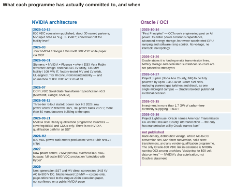
megmeet-sst-briefing-data.json → timelines.The architecture is published and hangs together, with one internal inconsistency worth knowing about. NVIDIA’s technical blog specifies converting 13.8 kV AC grid power directly to 800 V DC at the data-centre perimeter using industrial-grade rectifiers, then distributing via row-level 800 V DC busways over two conductors with DC-DC conversion in the compute rack.1 A different NVIDIA blog of the same date cites medium voltage “e.g., 35 kVAC” as the utility supply and puts AC-to-DC conversion “at the facility level”.1 NVIDIA’s own pages name two different MV classes. Ask which one a given site uses. Do not assume, and do not assume they are unaware of the discrepancy.
The load profile is the most important number NVIDIA publishes for a converter vendor: rack utilisation swings from 30% to 100% in milliseconds.1 NVIDIA’s own answer to it sits in the rack: 400 J of capacitor storage per GPU in Vera Rubin, “6× more rack-level energy storage” than the prior generation, Intelligent Power Smoothing and dynamic power steering.1 The commercial consequence is that the real negotiation is not whether your converter can ride the swing. It is how much of the ride-through is yours and how much is theirs.
The ecosystem roster is a weaker signal than it looks. NVIDIA’s October 2025 blog lists companies “building 800 VDC-compatible infrastructure”, which is a published alignment, not a qualification, a design win or a supply agreement.1 By August 2026 NVIDIA describes more than eighty manufacturers building to the specification, without publishing the list.1 Critically, that page does not break the roster into rectifier or SST sub-categories and names no vendor as an SST vendor — so any claim that a firm is “NVIDIA’s named SST partner” is unsupported by it.1 The three tiers it does name are silicon (fourteen firms including Infineon), power system components (Bizlink, Delta, Flex, Lead Wealth, LITEON and Megmeet) and data-centre power systems (ABB, Eaton, GE Vernova, Heron Power, Hitachi Energy, Mitsubishi Electric, Schneider Electric, Siemens and Vertiv).1
Each is anchored to something in the published record; where the record is silent, the question comes from the absence and is marked as such.
| # | The question | Why they ask it, and what you need ready |
|---|---|---|
| 1 | Two-wire 800 V or three-wire ±400 V — and can your unit do both? | The published architectures genuinely diverge: OCP’s Diablo is three-wire ±400 V, NVIDIA’s is two-wire 800 V with higher copper utilisation. A vendor without a side fails the first five minutes.1 |
| 2 | What is your input MV class — 13.8 kV, 34.5 kV, or both? | Their own pages name both, and the Siemens NVIDIA-aligned reference design is built on nominal 34.5 kV. They know the record is inconsistent and will test whether you do.1 |
| 3 | What is your grounding scheme, and do you support continuous insulation monitoring and active arc-fault detection? | The protection posture reported for the specification is high-resistance grounding, continuous insulation monitoring, active arc-fault detection and mechanical connector interlocks. Expect them to ask which of these your product implements and which it assumes the facility provides.1 |
| 4 | What is your available fault current and how fast do you clear? | The published ecosystem expectation is that an SST limits fault current to roughly 1.5× nominal for durations limited to hundreds of milliseconds — a radically different protection philosophy from a magnetic transformer feeding tens of kA, and it changes downstream breaker coordination entirely. Bring the number and the coordination study.1 |
| 5 | What is your isolation rating? | The published expectation is 100 kV insulation for a 35 kV input.1 |
| 6 | When the rack swings 30% to 100% in milliseconds, how much of the ride-through is yours and how much is the rack’s? | This is the single most important technical conversation you will have, because it is a negotiation about responsibility rather than a specification check.1 |
| 7 | What is your efficiency, at what load points, and measured across which boundary? | NVIDIA’s whole business case is an end-to-end claim, so a point efficiency at full load is not an answer to it. State the boundary and give the curve at the real load profile.1 |
| 8 | What is your unit rating and how do you get to a 2 MW row or a 4.8 MW block? | Their modularity numbers are published: a 2 MW row power centre for 2027 and 4.8 MW blocks with 1,250 A busways and a 4+1 catcher. Your paralleling story has to land on them.77 |
| 9 | Is it N+1 at the cell level, and are the sub-blocks hot-swappable? | The published expectation is modular sub-blocks with hot-swap capability, against availability targets of 99.9% for AI training and 99.999% for inference. Ask which workload class the site is, because the two numbers imply different products.1 |
| 10 | What is your failure mode, and what is the bypass? | NVIDIA-aligned reference designs target Tier III concurrent maintainability, and an SST with no bypass path cannot be concurrently maintained. This is a gating question, not a detail.1 |
| 11 | Are you UL-listed for the 800 V DC bus — and if not, what is your path? | Nobody is. Know your listing status precisely and do not overstate it; the honest answer here is worth more than a confident one.1 |
| 12 | How do you get into a DSX Ready category, and will you self-qualify or submit test data? | MV conversion is not yet a category. The right answer shows you know that and want to help define it.1 |
| 13 | What is your telemetry and control interface? | From the absence: NVIDIA publishes no telemetry or management-interface requirement: no reference to PMBus, Redfish, DMTF or Modbus on any page located (PMBus and Modbus are power-management and control protocols; Redfish is a management interface published by DMTF, a standards body). But the Siemens reference design specifies a centralised management suite with a single pane of glass, so integration into someone else’s DCIM (data-centre infrastructure management software) is the real requirement. Ask whose.1 |
| 14 | Do you fit in a factory-tested skid, and what is your lead time against the 2027 row date? | The one published NVIDIA-aligned reference design is delivered as pre-engineered, prefabricated, factory-tested MV and LV skids. Lead time is a schedule question against published dates.1 |
| 15 | What is your harmonic signature at the MV terminals? | From the absence: no NVIDIA or OCP harmonic limit could be evidenced. Since an SST is an active front end feeding a utility interconnect they will ask anyway; bring your THD (total harmonic distortion) figures and an IEEE 519 assessment before anyone requires one.1 |
| 16 | What is your cyber and firmware posture? | From the absence: not addressed on any NVIDIA or OCP page reachable. An SST is a software-defined, remotely updatable element of the critical power path; expect the review regardless.1 |
No voltage class, no distribution topology, no rack-power figure, no DC distribution, no medium-voltage conversion strategy, and no mention of solid-state transformers anywhere in Oracle’s own published material across its blogs, newsroom, data-centre pages and site pages.1 Oracle’s public voice on power is about sourcing it — grids, fuel cells, turbines, substations, ratepayers, interconnection — never about converting and distributing it.
Oracle’s only substantive engineering post on AI data-centre power is “First Principles: Data Center Innovations to Power Gigawatt Scale Superclusters” of 14 October 2025, by OCI’s chief technical architect and its VP of AI infrastructure. It is a one-minute read, and its entire statement on power is that AI gigawatt-scale data centres face “substantial load sizes and significant power fluctuations resulting from synchronous computational workloads”, and that to manage them “OCI leverages the current best practices integrating capacitance, advanced energy storage solutions, hardware-accelerated GPU ramping techniques, and software-based ramp control algorithms”.1 Those four levers are OCI’s published framing of the problem an SST would have to live inside.
NVIDIA’s blog states that “CoreWeave, Lambda, Nebius, Oracle Cloud Infrastructure and Together AI are among other industry pioneers designing for 800-volt data centers”.1 That is the strongest published Oracle–800 V DC link that exists, and it is NVIDIA’s characterisation of OCI, not an Oracle statement. Quoting it back to an OCI engineer as an Oracle position would be a mistake, and a visible one.
What Oracle has published is a power-procurement record, and it is unusually rich. Project Jupiter in Doña Ana County, New Mexico will be “fully powered” by up to 2.45 GW of Bloom Energy fuel cells, replacing previously planned gas turbines and diesel generators and consolidating the facility into “one single microgrid campus” — Oracle’s single most consequential published electrical decision.1 At Abilene, Oracle states the campus connects directly to the ERCOT grid with GE Vernova natural-gas turbines for backup, across eight buildings on 1,100 acres — and states no voltage, no rack density and no electrical topology.1 Oracle is also the tenant rather than the owner there: the campus is developed by a Crusoe, Blue Owl and Primary Digital Infrastructure joint venture and leased to Oracle.1 At Project Lighthouse in Ozaukee County, Wisconsin, Oracle names American Transmission Co. on the interconnection application — the only host transmission utility Oracle names by name anywhere in its own material.1 And Oracle states plainly that it is “funding new onsite transmission lines, battery storage, and dedicated substations” so costs are not passed to ratepayers.1
The framing is different. They are not checking you against a specification; they are deciding whether MV-direct conversion belongs in their next design at all. Sell the decision, not the compliance.
| # | The question | The published basis |
|---|---|---|
| 1 | Where does this fit in a campus we island on fuel cells? | Project Jupiter, up to 2.45 GW of Bloom fuel cells as one microgrid campus. Solid-oxide fuel cells are DC-native and Oracle has not said what it does with that DC — it is the only Oracle site where the published design makes a DC-native conversion conversation obviously relevant.1 |
| 2 | Does your converter replace or supplement capacitance and energy storage? | Position the SST against OCI’s own four published levers by name.1 |
| 3 | Can it act as an MV UPS, and does that let us delete equipment? | The OCP definition frames an MV SST coupled with energy storage as a medium-voltage UPS replacing the line-frequency transformer, rectifier units and storage. For a tenant paying for onsite transmission, storage and dedicated substations, deletion of apparatus is the argument that lands.1 |
| 4 | What does it do to our interconnection application and our behaviour at the point of common coupling? | Interconnection is on Oracle’s critical path and in its public statements. An active front end changes the PCC behaviour they have already filed.1 |
| 5 | We are the tenant, not the owner — who do you actually have to satisfy? | At several sites the specifying authority is the developer. Expect to be routed to Crusoe, Vantage, Related Digital or Digital Realty, and expect to be tested on whether you already knew that.1 |
| 6 | What service voltage do you need, and does it match what we already bought? | Oracle publishes no service-voltage class for any site but does fund dedicated substations. The question is whether your class matches substations already designed or ordered.1 |
| 7 | How does this interact with our closed-loop, non-evaporative cooling standard? | Oracle standardises on it, with water use “on par with a typical office building” and a one-time fill at Abilene. A liquid-cooled SST joins that loop on Oracle’s terms, or is air-cooled.1 |
| 8 | What is your availability figure and your failure mode, for an inference fleet? | The published ecosystem targets are 99.9% for training and 99.999% for inference, and OCI runs both on the same campuses. Ask which buildings are which.1 |
| 9 | What is your listing status, and what do we tell the AHJ and our insurer? | Oracle is building in Texas, New Mexico and Wisconsin under three regulatory regimes and is publicly sensitive to permitting. The published gap — no UL certification for the 800 V DC bus — is theirs to carry too.1 |
| 10 | What is the lead time, and is the supply chain domestic? | Oracle publishes no procurement posture, standardisation list, domestic-content rule or exclusion list for electrical equipment, so this is asked commercially rather than against a policy — but its community-facing material emphasises local suppliers and US siting.1 |
| 11 | What is the service model and where are the spares? | NVIDIA’s architecture claims up to 70% lower maintenance cost; an operator will ask you to evidence that in a service contract, for campuses Oracle says need more than 1,000 permanent employees.1 |
| 12 | Who else has one running, and at what scale? | Nothing in Oracle’s record indicates any SST deployment. With no internal reference and no published specification, the first question a cautious operator asks is for someone else’s operating hours. Have the honest answer ready.1 |
With NVIDIA you are being measured against a published architecture that does not yet have a box for your product, so the winning posture is technical precision plus an offer to help write the category. With OCI you are talking to an organisation that has published its power sourcing in detail and its power conversion not at all, so the winning posture is to arrive with the decision framed — what deletes, what it costs, who else is running one — rather than with a compliance answer to a specification that does not exist.
This is the chapter to be most careful in, because it is where guessing is most tempting and most costly. Everything below is either what Megmeet has published or an explicit statement that it has published nothing.
Across the thirty-eight sources pinned in the v7 dossier, the string “kV” does not appear once, and the converter is described only as taking grid high-voltage input to 800 V DC.8 A dedicated text scan of four filings, performed for this briefing, found zero hits for kV, for 千伏 (kilovolt) or even for 中压 (“medium voltage”) in the FY2025 annual-report summary, the H1 2026 interim report and two investor-relations records.1
Two details sharpen the point. In the FY2025 summary, the SST is described as directly accepting grid high-voltage input and delivering 800 V DC at over 98.5% efficiency, supporting megawatt-class centralised supply.1 In the H1 2026 interim, the same product carries two new words: 研发中, “under development”, and 预期, “expected”, in front of the efficiency figure.1 Between April and August, in other words, the company narrowed its own claim. And when an analyst asked point-blank in April 2026 for the specifications of the domestic and international versions, the answer named two versions and attached no voltage to either.1
A Chinese industry report is indexed as stating that Megmeet runs a “domestic 10 kV / overseas 35 kV dual version” with Infineon silicon and a prototype in the first half of 2027.1 During this briefing’s research the host returned HTTP 403 to every fetch, so the page was not read then.1 Dossier v8 has since read it: the page is ifeng’s of 1 July 2026, it attributes the split to the 20 May earnings call, and the exchange-filed record of that call calls the SST pre-research and contains no kV figure.78 There are three reasons not to carry it. The filed record of the call it cites does not support it.78 10 kV domestic and 35 kV international is exactly the inference an analyst would make from “domestic version / international version” under Chinese grid norms, and that is the inference this document forbids. And 35 kV is not a US service class; the US class is 34.5 kV. Treat it as a bounded lead of low confidence, and do not repeat it as Megmeet’s specification.
The chain Megmeet publishes runs: AC compensator → BESS and backup shelves → SST (>98.5%, 800 V DC out) → 1 MW+ sidecar → power shelves → point of load.8 Everything below the converter is specified and shipping; the converter is the one item not built. The table takes the chain box by box.
| Stage | What is disclosed | What is not |
|---|---|---|
| Solid-state transformer | Grid high-voltage input → 800 V DC; efficiency above 98.5%, stated as expected in the most recent filing; megawatt-class centralised supply supporting a PUE (power usage effectiveness: total facility energy divided by IT energy) below 1.1, as a company claim.8 | Everything else. No service-voltage class, no model number, no datasheet, no MVA or MW rating beyond “megawatt-class”, no topology, no MFT frequency, no footprint, no cooling, no protection scheme, no breaker, no availability date, no measurement boundary for the efficiency figure.1 |
| 800 V HVDC sidecar | 480/380 V AC → 800 V DC external power cabinet, over 1 MW per rack, configurable 800 V DC BBU and supercapacitor shelves; announced for NVIDIA Kyber in May 2025 — first mover among mainland vendors. Claims against legacy in-rack AC: up to +5% end-to-end efficiency, −45% copper, up to −30% TCO.8 | Those three claims are NVIDIA’s architecture claims for 800 V DC against a legacy AC hall, not measured Megmeet results, and they are not SST claims at all.62 |
| 800 V / 570 kW side rack | 800 V DC output rated 570 kW, with integrated battery-backup and power-conversion functions.8 | No efficiency figure, no redundancy scheme published. |
| Power shelves | 33 kW (IPU433-AI616): 1U 19-inch, 33 kW N+1 / 16.5 kW N+N, hot-swap, with IPMI/Redfish/SNMP management interfaces. 110 kW liquid-cooled for GB300 and Vera Rubin-class racks at 45 °C warm-liquid inlet. IPU433K-AA1616: 27.5 kW N+1 / 16.5 kW N+N, six 5.5 kW rectifier slots.8 | — |
| Backup | BBU shelf 1U: 180 s of backup at 16.5 kW, 240 s at 13.2 kW, peak support to 26.4 kW. Supercapacitor shelf 15 kW.8 | — |
| Server PSUs | CRPS / M-CRPS from 800 W to 5.5 kW (Ruby M-CRPS launched March 2026); 80 PLUS Platinum / Titanium (96%) / Ruby efficiency certifications; power density above 100 W/in³ as a company claim against under 50 traditional; hot-swap N+1, active PFC, PMBus 1.2 with black box; CB, UL, CE and CQC certifications.8 | — |
| Not sold at all | — | Megmeet sells no busway and no DC breaker. The shipping chain begins at three-phase 380–480 V AC.1 |
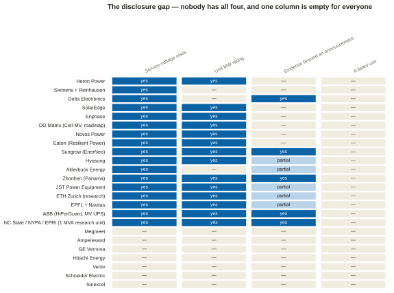
megmeet-sst-briefing-data.json → classLedger.For the SST specifically: nothing. There is no order, pilot, shipment, demonstration, tender or named customer anywhere, and the SST has never been exhibited: at the OCP Global Summit in 2025, Megmeet’s own investor record lists it as a roadmap item to match rather than a product shown.1 No Megmeet paper or white paper on SSTs exists, and no Megmeet patent family for an SST or MV converter was located; the closest filing is a high-voltage energy-harvesting winding structure of July 2026, which is not an SST stage.1
For the shipping business: real. GB300 volume orders were won and have contributed since the first quarter of 2026, via a US-headquartered ODM (original design manufacturer, the contract builder of the servers) to a North American cloud provider, neither of them named.1 Vera Rubin samples are under test at several North American clouds, and an AIDC agreement with Pace Digitek was announced on 21 July 2026 with no value or scope disclosed.1
The Dallas lab is real, and it is a shelf lab. Megmeet announced a new data-centre power testing laboratory in Dallas, Texas, on 26 June 2026, with 360 kW of active capacity, a roadmap to 1.5 MW and 800 V DC support, testing up to the 33 kW shelf and the 110 kW capacitor shelf.1 Its address, square footage and headcount are undisclosed, and the SST is not mentioned.1
The US footprint: the website and the filings differ. The established US entity, Megmeet USA, Inc., is in San Jose, California, and describes itself as sales, engineering, logistics and technical support, claiming no manufacturing.1 The company’s own About pages, however, place a 35,000 sq ft “U.S. manufacturing base” in the Fujitsu Industrial Park in Richardson, Texas, north of Dallas.78 A Texas licensing record shows a 39,200 sq ft Megmeet renovation at 2821 Telecom Parkway, Richardson, registered in May 2024.78 The HKEX application proof — the draft listing document for the company’s planned Hong Kong listing — lists no US manufacturing base and describes the US subsidiary as sales and international operations, and nothing states whether the Dallas laboratory sits in the Richardson building.78 The base the website describes is therefore located, but not in the filings.78
At 360 kW on an 800 V bus, the Dallas laboratory as described cannot energise a medium-voltage SST. It is sized for shelves and sidecars, which is exactly what it says it tests. If the SST is to be proved on US soil, the question of where has not been answered publicly, and that is why it is question 5 on the week-one list.
Megmeet appears on NVIDIA’s power-system-components tier, and that blog post does not discuss solid-state transformers at all: the naming is for rack and sidecar components.1 No OCP membership listing for Megmeet could be confirmed, but the OCP member directory also returned HTTP 403, so that is an unverified negative rather than a confirmed one.1
The interview brief of 14 August 2026 was written from dossier v2 and is five dossier versions stale; the study guide dates from 7 August.8 Neither file has been edited, because they are dated documents. The first table is the correction list for them. The second records where dossier v8 later contradicted this briefing itself.
| What the older document says | What the current record says | Kind |
|---|---|---|
| “The verdict lands soon — H1 report ~27 Aug 2026 … the first hard test.” | It landed on 27 August and it split: power products +60.92% to RMB 1.841bn at an expanding 25.06% margin, but ex-non-recurring net profit −16.13% and operating cash flow −84.62%.8 | superseded by event |
| “Power products +67% YoY in Q1 2026 to ¥817M” as the bull datapoint. | The current figure is the half-year rate: +60.92% to RMB 1.841bn.8 | stale quarter |
| “Consensus embeds a ~6× FY2026 profit rebound premised on AI power.” | Post-interim broker consensus is RMB 832M attributable net profit; H1 delivered 252M, about 30% of it, so brokers now model a materially H2-weighted year. No published beat-or-miss verdict on the interim was located.8 | refined, with a caution added · figure moved in v8 — see the next table |
| Segment names: smart home appliance controls · power products · NEV & rail · industrial automation · intelligent equipment · precision connection. | Current naming is 电源产品 power products · 智慧生活 smart living · 新能源交通 new-energy transport · 工业自动化 industrial automation · 智能装备 intelligent equipment · 磁电精造 magnetics and precision. And explicitly: there is no separate industrial-power reporting segment — industrial power sits inside power products.8 | renamed and clarified |
| “~40% of revenue earned overseas.” | Two different numbers with two different meanings: H1 2026 direct overseas revenue was RMB 2.180bn, 35.97% of the total and +45.49%; direct plus indirect is above 43%.8 | refined |
| “8,894 employees at end-2025 (~3,100 in R&D).” | 8,894 is still the filed figure at 31 December 2025, but R&D is now about 3,400 engineers, 34.6% of headcount, of whom more than 1,000 are AIDC-power technical staff.8 | moved |
| “Lite-On — #2, ~30%”; “Delta … ~70% of Blackwell-platform PSUs.” | Both are labelled trade and brokerage estimates in the current record, and Delta’s is stated as brokerage-estimated 60–70%.69 | tier of the claim |
| “Megmeet’s expected first hyperscaler volume delivery is domestic — a Chinese hyperscaler, in 2026 … North America is genuinely greenfield.” | The current strategy read states that volume delivery to North American majors began in Q1 2026.8 Both statements are in the corpus and they are not obviously reconcilable. | direct tension — week-one question 6 · resolved in v8 — see the next table |
| The brief carries no market-cap or balance-sheet context. | About ¥24 in early 2024 → ¥190 intraday and about ¥94.7bn market cap on 3 June 2026 → three limit-downs in July 2026 → ¥108.71 on 29 July. Guarantee quota above ¥6bn, more than 50% of net assets, mostly to leveraged subsidiaries, flagged by sell-side as contingent risk. Controlling group stake 28.68% in 2020 → 23.20% in February 2026, mostly passive dilution.8 | new material |
| “The Huawei dossier still records this as a draft, China-specific rule … and is stale.” (the brief’s own flag on the FCC action) | Discharged. The Huawei dossier now records the enacted FCC Covered List prohibition of 28 July 2026, the EU phase-out to April 2027 and the Lithuania remote-access bar.79 | fixed |
| The FCC two-prong read — bidirectional and wireless — “is inference from the definition, not a sourced ruling”. | Still true, and now better grounded: the definition does have two elements and both must be met, and an August 2026 update removed pure AC-to-DC rectifiers and off-grid inverters.1 The hedge stands. | still open — carry the hedge |
| The study guide: “SST — the endgame product … >98.5% efficient … this is what enables PUE below 1.1.” | The SST is recorded as still in development, with no class disclosed anywhere and the PUE figure a company claim.8 | overclaim |
| The study guide: “~5% better end-to-end efficiency, and ~45% less copper” as a property of 800 V DC. | Those are NVIDIA’s claims for the architecture against a legacy AC hall, and NVIDIA rates the SST and the MV rectifier identically.62 | tier error |
| The study guide: “full 800 VDC facilities with 1 MW racks are projected from ~2027.” | Option A is production Q3 2026, Option B deployment as soon as Q3 2027, Option C blocks now as TRUs, and MV-direct SST “toward 2029”.80 | date conflation |
| The study guide and lesson plan have no entry for TRU, ISOP, CHB, DAB, MFT, BIL, SSCB, HRMG, IMD/RCM or the 4.8 MW block. | That vocabulary is the whole 2026–27 engineering conversation, and chapter 1 of this document exists to fill it. | gap |
Dossier v8 was cut on the afternoon of 23 September, after this briefing was finished. It re-read every Megmeet filing and investor-relations record from September 2024 to August 2026, and both company websites, and six of its findings contradict statements in this briefing itself; a seventh bounds a lead that Appendix D.2 set aside.78 When the briefing was rewritten for clarity that evening, the body was corrected at each place the first column names, and each correction cites dossier v8. Two things were not rewritten: the rows of the table above are annotated rather than changed, because that table is the record for the older documents, and the data file and the companion keep their original wording, so the data file still lists “the US” among the manufacturing locations. This table stays as the record of what the briefing originally said and what changed. The superseding edition of the companion report, sst-hall-edge-block-rev2--competitive--2026-09-23, carries the same corrections.
| What this briefing says | What dossier v8 records | Kind |
|---|---|---|
| Week-one question 6 and chapter 16.3, and the “direct tension” row above: “volume delivery to North American majors began in Q1 2026.” | The interim dates the start of AIDC batch delivery to Q1 2026 across the whole customer chain — technology owners, system integrators and cloud operators — not to North America. The North America sentence is separate: batch delivery to 「部分北美大客户」 began in H1 2026, and the FY2025 annual report already recorded it by its 29 April publication date.78 | premise corrected — week-one question 6 |
| The same row and chapter 16.3: “North America is greenfield” against the Q1 delivery — “not obviously reconcilable.” | They reconcile once volume is separated from references. The company says it was late on GB200 and won limited orders there, then won GB300 batch orders contributing from Q1 2026, and names no customer, citing confidentiality.78 A Goldman Sachs note relayed by Sina says the first GB300 order ran through a US-headquartered ODM to a North American cloud provider, neither named.78 North America has volume but no named reference win — “greenfield” is right about references and wrong about volume. | tension resolved |
| The consensus row above: “Post-interim broker consensus is RMB 832M attributable net profit; H1 delivered 252M, about 30% of it.” | On 23 September, 15 institutions over six months carried a FY2026 mean of RMB 787M, in a range of 515–937M; H1’s RMB 252.1M is about 32% of it, and RMB 133.9M of that H1 figure was non-recurring. Guosen cut its own FY2026 forecast to RMB 652M on 9 September.78 The conclusion — a heavily second-half-weighted year — stands, and is sharper. | figure moved |
| Chapter 13, the first objection: “give the footprint, and give it precisely: manufacturing across China, Thailand, India and Germany.” The data file’s version of the same answer, which the companion shows, adds “the US”. | The filings name six manufacturing bases: five in China and one in Thailand. India is served through local contract manufacturers, and Germany is an R&D centre in Bielefeld, not a plant.78 The precise footprint is manufacturing in China and Thailand, contract manufacturing in India, R&D in Germany, and a US base that only the company’s website describes (next row). | overclaim — the objection’s own word “precisely” |
| Chapter 9.3 and chapter 13: the US entity is Megmeet USA in San Jose, “no manufacturing claimed”; the US plant confirmed in November 2024 has a location and status “the company has never published”. | The company’s own About pages place a 35,000 sq ft “U.S. manufacturing base” in the Fujitsu Industrial Park in Richardson, Texas, north of Dallas.78 A Texas licensing record shows a 39,200 sq ft Megmeet renovation at 2821 Telecom Parkway, Richardson, registered in May 2024.78 The HKEX application proof lists no US manufacturing base and describes the US subsidiary as sales and international operations, and nothing states whether the Dallas laboratory sits in the Richardson building.78 San Jose remains the address of Megmeet USA, Inc. | located, but not in the filings |
| Chapter 14 and week-one question 10: the displaced-LITEON story is “unsupported” and left open as a question of internal position. | Now closed rather than open. The story traces to two early-2025 pieces that attribute it to market rumour, and the company deflected the question when asked directly in December 2024. Soochow (April 2026) expects Megmeet to become NVIDIA’s third NVL72 PSU source, after Delta and LITEON, and the “~41% Delta” figure attached to the story appears in no source.78 The Delta and LITEON dossiers were corrected on the same day.81 | closed — carry as settled |
| Appendix D.2: the 10 kV domestic / 35 kV international SST split “was left out of every table because the page could not be read.” | The page — ifeng, 1 July 2026 — has now been read. It attributes the split to the 20 May earnings call, and the exchange-filed record of that call calls the SST pre-research and contains no kV figure.78 It is carried in the dossier as a bounded lead and stays out of every table here, now for a better reason: the filed record does not support it. | bounded, still not carried |
Chapter 6 gives the ledger by class. This chapter gives the head-to-head: what each competitor has that Megmeet does not, what Megmeet has that the competitor does not, and the one sentence to use about each. The first three columns are sourced. The last, the one sentence, is scripted language and is analysis throughout.
| Competitor | What they have that Megmeet does not | What Megmeet has that they do not | The one sentence |
|---|---|---|---|
| Heron Power 34.5 kV · 4.2 MW · pre-production | The most completely specified hall-edge SST in the public record, at the class US campuses take. It uses thirty 140 kW cells, ten in series per phase: a third of the thirty-five that the primer’s 1.7 kV assumptions give for this class, which is what a higher-voltage device and a lighter derating buy (and a reminder that chapter 6.2’s counts are a ratio argument, not a bill of materials). It tolerates two cell failures per phase with sub-cycle bypass, and specifies UL-listed current-limiting fuses and a disconnect rated 40 kA at 34.5 kV, a 40-channel DC panel, a per-rack SSCB clearing in under 5 µs below 2 kA, and a battery on the 800 V bus. Heron also holds the only startup place on NVIDIA’s facility-tier roster.5 | Revenue, a filed financial record, named Western OEM customers of long standing, and a shipping rack business; Heron has shipped nothing and does not reach mass production until late 2027.5 Megmeet also has factories: six manufacturing bases, five in China and one in Thailand.78 | “They have the specification and we have the factory. Neither of us has a listed unit.” |
| Amperesand 3.3 kV devices · 4–10 MW · no unit energised | A ten-year validation lineage at NTU (Nanyang Technological University) with 500 kW and 1.5 MW units tested on the Singapore grid, full-power overload and bidirectional testing of a later generation, eighteen patent families, and a 3.3 kV silicon-carbide front end that roughly halves the cell count of a 1.7 kV design.72 | Published datasheets. Amperesand publishes none, so its unit rating and input class rest on a supplier case study and trade-show reporting — and it publishes no kV figure at all. Also three chief executives in a year.72 | “Strong device choice, long lab record, and you cannot get a datasheet.” |
| DG Matrix shipping LV · MV dated 2028+ | The only venture SST vendor shipping a commercial product, an Infineon silicon-carbide supply agreement, a yearlong GPU-load-response test programme with NVIDIA, and ABB and Mitsubishi Heavy Industries on the cap table.6 | Nothing at the hall edge — but neither does DG Matrix. Its shipping unit is a 480 V AC skid at 96–97% peak on its own datasheet, and its own CFO deck dates the MV unit to “2028+”.6 | “They ship a low-voltage skid and market a medium-voltage one. Check which product is in the room.” |
| Novos Power pre-product | Nothing that can be evidenced.28 | Everything. Novos has 2–10 employees, no disclosed round, no Form D, no patent, no paper and no customer, and its claimed 48 kV input is above the 38 kV ceiling of the governing standard.28 | “Know the name; do not price it.” |
| Sungrow (EnerNeo) 10–13.8 kV · 3 MW · supplying | The only SST any filing describes as launched and supplying the market, with framework agreements for 30 MW and 100 MW, 312 kW/m², a 99.999% availability claim and a stated roadmap of field trials in 2026, batch orders 2027 and scale 2028.3 | A class that can serve a US hyperscale campus — neither has one, but Sungrow’s ceiling is published at 13.8 kV, while Megmeet’s is unpublished. Also: asked directly about North American sampling and UL progress, Sungrow left both unanswered.3 | “The most advanced SST in the world tops out at 13.8 kV. That is the state of the market, not a knock on them.” |
| Zhonhen (Panama) 10 kV TRU · supplying in China | A six-year head start on one-stage MV-to-DC conversion at scale, the largest HVDC field record anywhere, and NVIDIA naming the Panama Architecture as one of three TRU families in its own execution paper.71 | A published US-facing rack business and named Western OEM customers. Zhonhen’s exports are 4.1% of revenue, no US entity is on record, and it appears on none of NVIDIA’s three rosters.71 | “Panama is a transformer-rectifier lineup, not an SST — and NVIDIA named the architecture, not the company.” |
| Sinexcel samples, no formal sales | The only independent beat verdict among the Chinese interims this cycle, and a high-margin power-quality business with a genuine AIDC hook in its active voltage conditioner.76 | A published 800 V DC product. The string “800V” does not appear in Sinexcel’s 212-page interim, and management states four separate times that the AIDC products are samples with formal sales not yet realised.76 | “They have said, four times, that it is not selling yet. Take them at their word.” |
| Delta Electronics 6.6–35 kV claimed · widest range | The deepest published 800 V DC catalogue in the industry, the widest disclosed MV range of any incumbent, and the only vendor claiming shipped SST units — “dozens in Asia, customer pilots underway in the US”, which is the vendor’s own claim relayed by trade press.1 | Nothing at the block. At the shelf, Megmeet competes directly and is growing faster off a smaller base.8 | “Never attack Delta. Sell the second source during a re-qualification the buyer has to do anyway.” |
| LITEON no SST, no MV product | The battery-backup franchise — BBUs move from optional on GB200 to standard on GB300 — plus USD 919M committed to two McKinney, Texas plants and a target of 70% of capacity outside China by 2027.82 | An SST in the published chain at all, and a first-mover position on the mainland sidecar.8 | “US capacity is announced, not producing — and they have no MV product.” |
| ABB 4.16–34.5 kV MV UPS · orderable | The only orderable solid-state medium-voltage product anywhere: 2.5 MW per unit to 25 MW paralleled at 98%, UL 1741 and the first of its kind to achieve UL 9540, with a 34.5 kV direct-grid-connect class and an installed base at Applied Digital’s North Dakota campuses. Plus the first IEC-certified solid-state circuit breaker.7 | An 800 V DC output. HiPerGuard’s output is medium-voltage AC — it is a UPS, and ABB sold its grid business to Hitachi before the supercycle, so it cannot supply the transformers its own campuses wait on.7 | “The most credible MV solid-state product in the market is a UPS, not a transformer.” |
| GE Vernova 13.8 kV reference designs | Three jointly developed NVIDIA AI-factory reference designs, an MV-UPS and rectifier catalogue, Prolec GE wholly owned, and the single most important commercial datapoint in the tier — a hyperscaler cost-share carrying a commitment to buy 1,000 SSTs from 2027 if a specification is met.73 | A published product. GE Vernova has no dated SST product, no class and no rating on the record, and its stated first hyperscaler delivery of autumn 2026 has not been reported.1 | “The only disclosed hyperscaler SST purchase commitment in the market belongs to a company with no dated product.” |
| Eaton owns SST IP | The best-hedged incumbent: it bought Resilient Power outright, published an 800 V DC reference architecture at OCP, owns the prefabricated-enclosure chokepoint and the thermal business, and states on its own earnings call that it is piloting nearly ten SST projects including with hyperscalers, with orders in H2 2026 and shipments from late 2027.1 | A published specification. Eaton’s MVSST rating and class are trade-press only — its own catalogue page and brochure returned HTTP 503 to the research pass, so no vendor spec sheet was obtained.1 | “If SSTs win, Eaton owns the technology; if not, it owns the skids.” |
| Schneider Electric no MV SST programme found | The reference designs, the digital twin, the cooling and a 1.2 MW-per-rack 800 V DC sidecar, plus a $373M capacity-reservation agreement with Digital Realty.75 | Nothing at the converter — the sidecar was still a prototype at GTC 2026 with no commercial date, and no Schneider MV SST programme was found.75 | “Systems leader, defending the AC facility architecture rather than attacking it.” |
| Vertiv 34.5 kV stated as a goal | The demand-capture leader by backlog and the highest data-centre revenue concentration among large caps, with a full 800 V DC portfolio releasing in H2 2026 for a 2027 ramp.55 | An SST. Vertiv’s own director of engineering states 34.5 kV to 800 V DC at 3–5 MW as a goal, and the shipping sidecar at 400–900 kW is not an SST.1 | “The incumbent most architecturally exposed if conversion moves upstream — and they have said so in public, in the form of a goal.” |
| Hitachi Energy no SST product named | The scarcest input in the industry: MV and HV transformer capacity, roughly half of all HVDC projects ever built, and $1bn committed to US manufacturing including a $457M Virginia plant.74 | An 800 V DC converter product of any kind. Hitachi Energy has none announced — and is separately quoted urging caution on compact 34.5 kV designs.1 | “Moat and motive at once: their own transformer waits of 30–40 months are what created this market.” |
| Siemens + Reinhausen up to 36 kV · undated | A credible MV-magnetics partner and a class that covers 34.5 kV.1 | Anything dated. No MW rating, no efficiency, no date and no NVIDIA mention — a follower posture, announced in August 2026.1 | “Announced in August 2026 with no rating and no date.” |
Megmeet is neither an AI company nor an appliance company. It is a power-conversion platform pointed at six industries, and the six do not behave alike. The table ranks them by how defensible each position is on the evidence, not by revenue, because the biggest unit is the weakest. Share is each group’s share of revenue and GM its gross margin.
| Business group | Share | GM | The evidence | Who it is up against, and what decides the sale |
|---|---|---|---|---|
| Intelligent equipment — welding power sources 智能装备 · Strongest in the company | 4.6% | 39.67% | Megmeet claims the top share of China's robotic gas-shielded arc-welding power-source market for ten consecutive years since 2014 and about 30% share in 2020-21 — company claims on the company's own site, not an audited ranking.1 What is checkable is commercial: repeat framework deals with Honglu for 1,500 and then 1,800 robotic welding machines, integration with FANUC, ABB and KUKA, exports to 60+ countries. Highest gross margin in the company at 39.67% and rising.8 | Jasic, Riland, Shanghai Hugong domestically; Panasonic and Lincoln Electric among global brands present in Chinese rankings |
| Power products — AI data centre and network power 电源产品 · Real, growing, and unranked | 30.4% | 25.06% | The only mainland vendor NVIDIA named for GB200 NVL72 power and on both of the rosters NVIDIA published before it stopped naming vendors — the October 2025 ecosystem post and the August 2026 component tier; the company's own H1 2026 wording is "one of NVIDIA's designated recommended data-centre power suppliers" — membership of a set, not a rank. +60.92%, and the only one of the three largest segments whose gross margin expanded. No AI-data-centre revenue line is disclosed at any granularity.8 | Delta (the benchmark), LITEON (the second source), Flex, Bizlink, Lead Wealth at the shelf; Sungrow, Zhonhen, Sinexcel and the incumbents at the block above |
| Industrial automation 工业自动化 · Credible, small, well behind the leader | 7.4% | 27.78% | +39.85% in FY2025, the second-highest margin pool in the company at 27.78%. The company's own scope statement leads with servo and VFD (variable-frequency) drives, not PLCs and HMIs (the controllers and operator panels). The market is genuinely unconcentrated: across ten listed Chinese players, CR3 (the combined share of the top three) is reported at around 9% and CR10 at around 12%.1 | Inovance is the reference point and is far larger with a much broader portfolio; INVT also named. No source places Megmeet on a ranked share table against Siemens, Schneider, Mitsubishi Electric, Yaskawa or Estun |
| New-energy transportation (NEV and rail) 新能源交通 · Volume land-grab, margin-dilutive | 9.3% | 13.46% | Revenue doubled in FY2025 (+108.65%) at the lowest gross margin of the major segments; 13.46% in H1 2026. More than a million OBC (on-board charger) plus DC-DC units shipped in 2025, combined.8 Named OEMs: Geely, BAIC New Energy, Leapmotor, Changan, Dongfeng, FAW, Seres.1 | VMAX, Enpower, Shinry, Fute lead the published OBC rankings — Megmeet appears on none of them |
| Smart living (appliance controls, smart bathroom) 智慧生活产品 · Biggest unit, weakest position, deteriorating | 42.2% | 18.39% | 42.19% of revenue at 18.39% gross margin, down about 4.2 points in a year. It was the only segment that shrank in FY2025 (-4.8%). Named customers: Xiaomi, Haier, Hisense, Changhong, Skyworth. The smart-bathroom line is genuinely distinctive rather than a controller commodity.1 | Topband at RMB 11.08bn of FY2025 revenue and H&T at roughly RMB 9.7bn are each about three times Megmeet's whole appliance unit, and are the acknowledged duopoly. Megmeet is third tier |
| Magnetics and precision manufacturing 磁电精造 · Vertical integration rather than a merchant business | 5.0% | 8.79% | 8.79% gross margin, up from 5.1% but still the lowest in the company. The company describes it as an investment-and-integration period.8 Shaped magnet wire, coaxial cable, ultra-fine flat wire and FFC/FPC (flat flexible cable and flexible printed circuit), feeding the company’s own magnetics supply as well as external sales.1 | No ranked competitor set located |
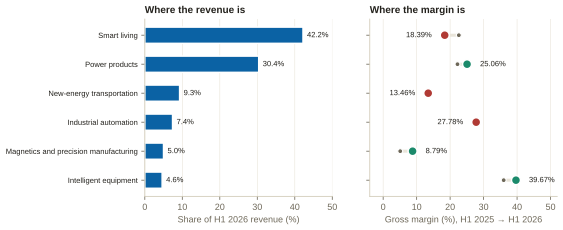
megmeet-sst-briefing-data.json → megmeetMix.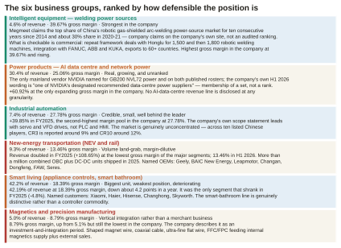
megmeet-sst-briefing-data.json → buLadder.The company’s single strongest competitive position is in welding, not in data centres. Intelligent equipment carries the highest gross margin in the company at 39.67%, and the welding line inside it is the only unit with a defensible leadership claim — supported not by a share number but by repeat framework deals for 1,500 and then 1,800 robotic welding machines and by certified integration with FANUC, ABB and KUKA. It is 4.6% of revenue.
The price war is in the biggest unit. Smart living is 42.19% of revenue at an 18.39% gross margin that fell about 4.2 points in a year, against two rivals each roughly three times its size. That is a share-defence position, and it is the wallet funding the AI bet.
The profit pools are not the big units. Intelligent equipment and industrial automation together carry the two best margins in the company and together are 12% of revenue. Any story about Megmeet that starts with the appliance business misreads where the company actually makes money — and any story that starts with AI data centres misreads where it currently earns it.
Four regimes bear on a China-headquartered vendor selling medium-voltage power conversion into US AI infrastructure, and they do not fit together cleanly. Getting them right is worth more in a procurement conversation than any technical answer, because procurement is where this product line is most likely to be stopped.
On 28 July 2026 the FCC’s Public Safety and Homeland Security Bureau added foreign-produced power inverters to the Covered List, implementing national-security determinations issued the previous day.1 The definition has two elements and a device must meet both: it must be “a bidirectional power device or system that converts direct-current electricity to alternating-current electricity, or alternating-current electricity to direct-current electricity”, and it must contain components “enabling remote communication, control, sensing, data collection, or monitoring”.1 There is no voltage or power threshold. A telemetered MV solid-state transformer is a literal instance of both elements.
Three things are commonly got wrong about it. It is not a China rule. “Foreign-produced” is defined by failure of the Buy American standard at 48 CFR §25.101(a) — generally US manufacture with domestic component costs above 65% for 2024–2028 — so it is a content test, not a nationality test, and a US-headquartered vendor building offshore is captured while a China-headquartered vendor building in the US in principle is not.1 It is prospective. Models authorised before 28 July may continue to be imported, marketed, sold and used.1 There is a route out, through conditional approval by the Department of War or DHS, with applications due by 1 January 2028 requiring ownership disclosure to 5% beneficial owners, a component-level bill of materials with country of origin, identification of who is responsible for software updates, and a time-bound US manufacturing plan with committed capital.1
And one thing has changed since the primer: an August 2026 update removed pure AC-to-DC rectifiers and off-grid inverters from the list and added a 45X safe harbour — so a unidirectional rectifier-only architecture may sit outside the rule where a bidirectional SST does not.1
Executive Order 14421, “Declaring a National Emergency to Secure the United States Bulk-Power System”, was signed on 26 August 2026 under the International Emergency Economic Powers Act. It covers transformers, inverters, circuit breakers, generation turbines, reactors and battery storage, plus associated components, software, firmware, digital services, maintenance services and remote-access capability linked to a covered foreign entity.1 Crucially for this product line, it applies to transmission facilities rated 69 kV and above and local distribution is excluded. DOE must issue implementing regulations within 120 days — by 24 December 2026 — and FAR revision recommendations within 180 days.1
A 34.5 kV behind-the-meter hall-edge converter is probably outside EO 14421, because it sits on local distribution below 69 kV, and inside the FCC Covered List, which has no voltage threshold at all. The two regimes were written for different problems and do not line up. Saying this accurately, and saying which one you think binds and why, is a stronger position than either claiming exemption or conceding exposure — and it is a question for counsel and the certification body, which is a strength to say out loud rather than a dodge.
A Section 232 tariff of 50% on semi-finished copper and copper-intensive derivatives took effect on 1 August 2025 — copper windings being the second-largest bill-of-materials line in both a line-frequency transformer and an SST.22 Section 301 rates on certain Chinese imports rose from 1 January 2026, and a January 2026 Section 232 proclamation imposed an immediate 25% tariff on certain advanced semiconductor articles; no transformer-specific or power-electronics-specific line item was located, with corporate filings describing the exposure generically.1 In the European Union, the Commission moved in April–May 2026 to restrict EU funding for projects using inverters from high-risk countries, phasing in from 1 November 2026 with new contracts fully incorporating the restrictions from April 2027.1
Megmeet’s own language on tariffs is direct: activating Thailand factory capacity can, to a large extent, avoid the US tariff problem.1 It also states that US sanctions and export-control regimes may involve certain of its customers and suppliers.1 No disclosure on FEOC (the US “foreign entity of concern” category) or on Section 889 (the federal procurement ban on certain Chinese telecommunications equipment) appears anywhere in its filings.1 And on listings: no UL or ETL listing number is disclosed for any Megmeet data-centre product.1 The company claims UL, TÜV and CNAS laboratory accreditations, which are a credential for its in-house testing, not a listed product.1
Megmeet stated in April 2025 that direct exports to the United States were under 3% of total revenue.1 The North American data-centre push is therefore a new build-out, not the scaling of an existing US business — which is the honest way to describe the territory to anyone who asks, and a more defensible position than implying continuity that does not exist.
Every chapter in this part is analysis. The objections are built from the evidence in Parts I–IV and from the objection set in the August 2026 interview brief, whose format this follows; the answers are one reading of that evidence, not guidance from anyone at Megmeet. Where an answer introduces a fact that appears nowhere else in this document, it carries its source number here. Where it restates a fact established in Parts I–IV, which is most of them, the number sits where the fact is established and the answer does not repeat it, because a sales script bristling with citations is not a sales script. The exception is the dossier v8 corrections listed in chapter 9.4: each carries its number wherever it is applied. Nothing in this part is evidence that is not already in the four parts above it.
Seven objections a US data-centre buyer raises about a China-headquartered SST vendor. With every one of them, the strongest move is to raise it yourself before they do.
| What they say | What they are really asking | The strongest honest answer | What never to say |
|---|---|---|---|
| "You are a Chinese supplier — will procurement or legal block this after I have spent a qualification cycle?" | Am I going to waste six months? | Answer with the actual regime, not with reassurance. The binding US rule for this product class is the FCC Covered List of 28 July 2026, and it has two prongs that must both be met: a bidirectional AC-DC converter, and components enabling remote communication. It is a content test, not a nationality test: "foreign-produced" means failing the Buy American standard at 48 CFR 25.101(a), so a US-headquartered vendor building offshore is captured too.1 Then give the footprint, and give it precisely: manufacturing in China and Thailand, contract manufacturing in India, and R&D in Germany.78 On US soil there is a 35,000 sq ft “U.S. manufacturing base” in Richardson, Texas, that only the company’s own website describes; the filings do not list it.78 There is also a Dallas-area test laboratory, and the registered US entity, Megmeet USA in San Jose, describes itself as sales and engineering and claims no manufacturing (chapter 9.3).1 Then the proof that actually lands: Ericsson, Cisco, Juniper, Arista and Accton already buy Megmeet power and have already run their supplier audits.8 | Never promise a regulatory outcome, and never say the rule does not apply. Say which prong you think you fall outside of and why, and say it is a question for counsel and the certification body. |
| "What is your input voltage class?" | Can you even serve my campus? | This is the one you cannot talk your way around, and pretending otherwise is the fastest way to lose an engineer. The published record carries no class for Megmeet's SST. The honest answer on day one is: the sidecar and the rack products are specified and shipping, the converter is under development and the class is not published yet — and then ask what class their campus takes, because that is the answer you need to bring back internally. | Never infer a class from Chinese grid norms. A third-party report circulating a 10 kV domestic / 35 kV international split is exactly that inference, the filed record of the call it cites does not support it, and 35 kV is not a US class.78 |
| "We have never deployed you at this scale." | Am I the guinea pig? | Concede the specific and redirect to the general: new to hyperscale MV conversion, not new to high-volume power manufacturing. Then make the structural point: standardised form factors let a buyer take a limited, low-risk slot first. At the rack that is literally true: a CRPS module fits any compliant chassis. | Never claim an installed base at the hall edge. Nobody in the industry has one — no covered vendor has an energised, named-site, hyperscaler MV SST, and saying so is more credible than implying otherwise. |
| "Delta already has this socket." | Why re-open a qualification that works? | Never attack Delta — they are good and the buyer knows it. Sell the second source: the concentration is a risk they already manage elsewhere in the bill of materials. Then sell timing: the architecture change forces re-qualification anyway, so the switching cost you are asking them to absorb is one they are already absorbing. | Never use a share number. Every server-power share figure in circulation is a trade or brokerage estimate, and the buyer will know which ones are contested. |
| "Your financials look shaky." | Will you still be here mid-programme? | Do not flinch: it is public and they have read it. Profit fell because the company chose to spend ahead of revenue. H1 2026 power products grew 60.92% and was the only one of the three largest segments whose gross margin expanded, and the diversified base across six business groups is why the AI bet does not have to work on the first try. Then give them the number that is genuinely uncomfortable, and let them see you know it: profit excluding non-recurring items fell 16.13% in the same half, and operating cash flow fell 84.62%. | Never quote the headline +45.21% without the ex-non-recurring -16.13% beside it. An analyst will have both, and offering only the first one costs more credibility than the second one costs goodwill. |
| "What if 800 V DC slips?" | Am I buying a roadmap? | Point at the bridge. The sidecar exists because buildings on 380-480 VAC need megawatt racks now, and the near-term catalogue sells into today's architecture regardless. NVIDIA's own staging has the power rack in production in H2 2026 and the row power center in 2027 — neither needs an SST. The roadmap is upside, not the thesis. | Never cite the 2029 SST date as if it were a commitment to buy one. It is a date attached to a next-generation architecture in a paper that names no vendors. |
| "Who else has one running?" | Show me operating hours. | The honest answer is that at megawatt scale on a US feeder there is essentially one: a 1 MW research unit from NC State with the New York Power Authority and EPRI, validated on a real distribution feeder, announced August 2026. Everything else is a pilot, a framework agreement or a claim. Say that, and then say what your own first article would look like and who would witness it. | Never let a framework purchase agreement be described as a deployment. Sungrow's 30 MW and 100 MW frameworks are the largest committed volumes anywhere and no unit has been evidenced energised. |
Ten things that sound knowledgeable and are wrong. Each is a sentence said by someone who has read one article, and each can be corrected by someone who has read two.
| Do not say | Because |
|---|---|
| "An SST is about 5% more efficient." | That is NVIDIA's claim for the 800 V DC architecture against a legacy AC hall it puts at under 90% — and NVIDIA rates the SST and the MV rectifier identically at 98.5% or better. The SST's case is stage elimination, footprint and control.83 |
| "The bus is plus-minus 400 volts." | NVIDIA specified single-ended 800 V — positive, return, protective earth — and rejected bipolar for lack of three-pole DC breakers.12 Plus-minus 400 V is the OCP variant the rack can also accept.1 The published architectures genuinely diverge, and a vendor without a side fails the first five minutes. |
| "Zhonhen's Panama / ABB's HiPerGuard / Vertiv's PowerDirect is a solid-state transformer." | They are a transformer-rectifier lineup, a solid-state medium-voltage UPS and a rack DC shelf respectively.84 NVIDIA's own paper names the Panama Architecture as a TRU implementation — as an architecture, not as a company.54 |
| "Abilene is served at 34.5 kV." | Abilene's Oncor interconnection is 345 kV transmission and the campus distribution class is undisclosed. One decimal point turns a transmission fact into a fabricated service-class finding, and it is the single most likely error to introduce.1 |
| "Oracle is designing for 800 V DC." | That is NVIDIA's characterisation of OCI, not an Oracle statement. Oracle has published nothing on 800 V DC, DC distribution, MV conversion or solid-state transformers. Quoting it back to an OCI engineer as an Oracle position would be a mistake.1 |
| "We are NVIDIA's named SST partner." (or anyone is) | NVIDIA's ecosystem page names no vendor as an SST vendor and does not break the roster into rectifier or SST sub-categories.1 Megmeet's own filing says "one of NVIDIA's designated recommended data-centre power suppliers" — membership of a set.8 |
| "Megmeet displaced LITEON as the number-two NVIDIA power-shelf source." | The question is now closed, and the record does not support the story. It traces to two early-2025 pieces that attribute it to market rumour, and the company deflected the question when asked directly in December 2024.78 Soochow (April 2026) expects Megmeet to become NVIDIA’s third NVL72 power-supply source, after Delta and LITEON, and the “~41% Delta” figure attached to the story appears in no source.78 The company has never claimed it, and the H1 interim names no competitor across 238 pages.8 The one contemporaneous supplier account names LITEON second, and two research houses covering the same market in mid-2026 name Delta and LITEON without mentioning Megmeet.69 |
| "Megmeet's revenue is about thirteen billion dollars." | FY2025 revenue is RMB 9.403bn, about USD 1.3bn. Chinese filings quote 亿元 — hundreds of millions — and machine translation renders it as "billion" with depressing regularity. Getting a company's own revenue wrong by 10x in the first month is not recoverable.8 |
| "The SST relieves the transformer shortage." | Partially at best. It removes the 480 V layer, but not the utility service transformer where the utility owns it, nor the MV switchgear, cable or substation — and it trades cores of grain-oriented electrical steel (the specialised steel of transformer cores) for medium-frequency cores and hundreds of SiC modules, on a supply base a fraction of the transformer industry's scale.22 |
| "It is UL listed." (of anything at the 800 V DC bus) | As of the most recent analyst survey no vendor had completed UL certification for data-centre SST deployment, and the most quotable line from PCIM Europe 2026 is that there is no specification and no UL certification for the 800 VDC bus, and that this is a major gap.1 |
Ranking criterion: decision leverage — how many of the other answers in this brief would have to be rewritten if the answer came back other than expected, not how interesting the question is. The order means that if you get only three answered in the first week, these are the three.
| # | The question | What the answer changes |
|---|---|---|
| 1 | What service-voltage class is the SST being designed to, and is it one product or two? | Everything. It decides whether Megmeet is in the hall-edge contest at all, which US campuses are addressable, and whether the cell count is a 15 kV-class or a 35 kV-class bill of materials — a factor of 2.3× to 2.7× in cells, magnetics, gate drivers and control channels, depending on which 15 kV-class voltage the comparison starts from. |
| 2 | Is there a target date for a first article, and is there a witness — a customer, a lab, or an NRTL (a nationally recognised testing laboratory, such as UL)? | It separates a product programme from a roadmap slide. Nobody in the industry has a listed unit, so the first vendor with a witnessed first article at a named class takes the layer's narrative. |
| 3 | Which listing path are we on — UL 1741 with supplements, UL 347A, UL 2877, IEC 62477-2 — and who is the NRTL? | Certification is 6–18 months and mid-six figures per product on the one published estimate located — a certification body writing about the market it sells into, so read the range as its floor rather than its centre1 — and each variant recertifies. It sets the earliest possible US revenue date more firmly than any engineering milestone. |
| 4 | Where does the FCC Covered List analysis land for the sidecar, the shelves and the SST — and who has written it down? | The rule has no voltage threshold and two prongs. A unidirectional rectifier with wired management plausibly sits outside; a bidirectional, telemetered SST plausibly sits inside. If nobody has written the analysis, that is the first thing to cause to happen. |
| 5 | What is the Dallas lab actually for, and what is its ceiling? | It is 360 kW today with a 1.5 MW roadmap — which is a shelf and sidecar validation facility, not somewhere an MV converter can be energised. If the SST is to be proved in the US, the question is where. |
| 6 | What does the batch delivery to North American customers that began in the first half of 2026 actually consist of, and who are they? | Dossier v8 separates two things the older record ran together. AIDC batch delivery began in Q1 2026 across the whole customer chain, while batch delivery to “some large North American customers” began in H1 2026, and a Goldman Sachs note relayed by Sina says the first GB300 order ran through a US-headquartered ODM to a North American cloud provider, neither named — a brokerage account, at second hand.78 So North America has volume but no named reference win.78 The answer decides whether the job is building a first proof case or scaling an existing book, and whether any of that volume can be turned into a reference. |
| 7 | What is the overload specification, the part-load efficiency curve, and the MTBF or FIT number for the converter? | Nobody in the industry publishes any of the three. Whoever publishes first owns the engineering conversation — and if we cannot answer internally, we cannot answer an NVIDIA or OCI engineer either. |
| 8 | What is the service model — vendor field engineers or the owner's electricians — and what is the spares strategy and the warranty term? | Only one vendor in the entire research pass publishes a warranty at all. For a first-of-a-kind MV asset the commercial terms are the product, and an owner's engineer will ask before an electrical engineer does. |
| 9 | Are we in the OCP LVDC SST specification work, and do we have v0.3? | It is the vocabulary every counterparty will use and more than 80 manufacturers are reported to be building to it. It could not be retrieved in this run because opencompute.org refused every request — so the first practical task is to get the document. |
| 10 | Has anyone inside been asked to repeat the displaced-LITEON story, and does the internal answer match the settled external one? | Least leverage on the market, most on personal credibility. The external record is now settled: the story traces to early-2025 market rumour, the company deflected it when asked in December 2024, and Soochow expects Megmeet to become NVIDIA’s third NVL72 power-supply source.78 Confirming that the internal answer matches is worth doing before the first customer meeting. |
Named, not smoothed over. Each of these is a real hole, and several are holes in the market rather than in the research, which is a different and more useful kind of finding.
Four hosts refused this research pass, and each refusal cost something specific. opencompute.org returned HTTP 403 to every attempt by two tools, which blocked the OCP LVDC Solid-State Transformer Specification v0.3 — the single most important primary document for this subject. Everything this briefing says about its contents is second-hand and flagged as such.1 eaton.com returned HTTP 503 on both the MVSST catalogue page and its brochure, so no Eaton specification was obtained at all.1 intertek.com returned 403, so the UL 347A and UL 2877 scope statements rest on a search-index summary rather than on the certifier’s own page.1 ferc.gov returned 403, so every FERC fact in this document is law-firm-mediated.1
Several standards-mapping claims in chapter 7 rest on a niche newsletter that has itself published a self-correction about conflating announcements with deployments. Those are marked low confidence at each use, and the NEC Article 706 “100 V DC default” figure in particular is uncorroborated — the inspectors’-association article that was reachable makes no mention of 800 V DC at all, which is consistent with a gap but is not positive confirmation of it.1
Twenty-six cards, one per term, in the order of chapter 1. Cover the right-hand side. The wording follows the rewritten chapter 1; the spaced-repetition widget in the study companion drills the same twenty-six terms from the data file, in their original wording.
| Front — the term | Back — what it is, the number, and the sentence to say it in |
|---|---|
| SST — solid-state transformer Topology | A power-electronic converter that provides a transformer’s two functions — changing the voltage, and galvanic isolation, meaning no direct electrical path between input and output — through medium-frequency magnetics, with controllable AC-DC and DC-DC stages on either side.32 Number: 97–98.5% efficiency for MV-to-DC units; 99.0–99.5% for a good 60 Hz distribution transformer alone18 “It is a converter, not a transformer. That is why it can also rectify, regulate and ride through — and why it has the overload manners of a computer rather than of a block of iron.” |
| ISOP — input-series, output-parallel Topology | The connection pattern of an SST: cells stacked in series on the medium-voltage input, so each sees a fraction of the line voltage, and tied in parallel on the low-voltage output.31 “Series on the MV side so each cell sees a fraction of the line; parallel on the LV side so they make one stiff bus.” |
| CHB — cascaded H-bridge Topology | A multilevel converter built from single-phase full bridges (H-bridges) connected in series. It is the standard way to face medium voltage with low-voltage semiconductors: stack enough cells and each carries only its share of the line.17 Number: 13.8 kV needs 14–15 cells per phase with 1.7 kV devices; 34.5 kV needs about 2.5× as many33 “The cell count is the cost driver — each cell is a complete converter with its own capacitor, transformer, gate drivers and sensors.” |
| DAB — dual active bridge Topology | An isolated DC-DC converter with an active full bridge on each side of the transformer. Power flow is set by the phase shift between the two bridges’ square waves, so it can run in either direction by construction.34 Number: 5–50 kHz switching35 “Both bridges are active, so power can go back to the grid. A passive rectifier can never do that.” |
| CLLC / LLC Topology | Resonant isolated DC-DC topologies. A resonant tank circuit (the inductors and capacitors that give the names their Ls and Cs) lets the switches turn on and off at zero voltage or zero current, which cuts switching loss; CLLC is the bidirectional form.35 Number: NVIDIA specifies a 64:1 LLC with a matrix transformer to go from 800 V straight to 12 V inside the rack12 “Resonant variants trade control range for soft switching and lower loss — and they tend to lose soft switching at light load.” |
| MMC — modular multilevel converter Topology | A multilevel converter built from half-bridge cells and used in HVDC (high-voltage DC) transmission; an alternative front end to the CHB at higher voltages.36 Number: N+1 redundancy (one spare cell beyond those needed) raises a modular multilevel drive’s MTBF (mean time between failures) by about 1.7× — the one independent redundancy number available1 “It is also where the SST’s service model comes from: MV drives have been swapping cells in minutes for two decades.” |
| TRU / MV rectifier Topology | A conventional transformer stepping medium voltage down to low voltage, feeding a rectifier — diode, thyristor or active — to produce 800 V DC.37 Number: NVIDIA’s named near-term path, mature from electrolysis, rail and mining. NVIDIA rates the MV rectifier and the SST identically, at 98.5% or better and as large as 7.5 MVA2 “NVIDIA’s own paper calls the TRU a faster, proven path and reserves the SST for the next generation. Do not sell against the TRU on efficiency — they are rated the same.” |
| MFT — medium-frequency transformer Magnetics | The kilohertz transformer inside each SST cell. It is small because the volt-seconds it must carry in each cycle fall as the frequency rises. It is demanding because it must hold medium-voltage insulation in that small volume while the fast-switched square waves of pulse-width modulation (PWM) stress it.38 Number: Raising f from 60 Hz to 10 kHz shrinks core area by roughly 170×; a 4 MW unit weighs about a fortieth of its 60 Hz equivalent — Infineon’s comparison is 20 tonnes to about 500 kg10 “The magnetics are the part with the fewest suppliers: a low-loss nanocrystalline or ferrite core, MV insulation between windings, and a cooling path for the losses in a small volume.” |
| BIL — basic insulation level Magnetics | The lightning or switching impulse voltage a piece of equipment must withstand. It is set by the equipment class in the ANSI C84.1 standard, not by the vendor.39 Number: 15 kV class = 95 kV BIL; 25 kV class = 125 kV; 35 kV class = 150 kV4 “The class sets the insulation, the BIL and the cell count — which is why a 13.8 kV SST is a different product from a 34.5 kV one.” |
| PD — partial discharge Magnetics | Small, localised electrical breakdown inside insulation. It does not bridge the electrodes, but it erodes the insulation over time, and the very fast voltage swings (high dv/dt) of wide-bandgap devices such as SiC drive it.20 Number: A 35 kV interface needs roughly 100 kV of insulation — "three times", in TDK’s assessment20 “Oak Ridge’s point is that IEEE C62.82.1 was written for iron: localised overstress can occur even when terminal-level clamping looks adequate, and impulse tests may not reflect internal stress.” |
| SiC — silicon carbide Devices | A wide-bandgap semiconductor: its wider energy gap lets a device block more voltage and switch faster than one made of silicon. SiC makes 1.2–3.3 kV MOSFETs (the transistor type used as the switch) practical at kilohertz switching, and it is the enabling device of the SST.40 Number: Production classes 1.2, 1.7 and (from few suppliers) 3.3 kV; 6.5 and 10 kV exist as samples. SiC fell from over $10/A (dollars per ampere of rating) in 2018 to $2–3/A in 202540 “Moving from 1.7 kV to 3.3 kV devices roughly halves the cell count. That is why Amperesand builds on 3.3 kV parts, and why Wolfspeed’s wafer capacity is a supply question for the whole layer.” |
| Cosmic-ray derating Devices | Atmospheric neutrons, produced by cosmic rays, can cause single-event burnout in power devices held at a high electric field, so each cell’s DC-link voltage is set well below the device’s rating.41 Number: The customary derating is about 0.55 × device rating — the factor behind every cell-count figure in this brief1 “Burnout can occur at 50% or less of rated breakdown, so the derating is not conservatism. It is the design rule.” |
| Fail-short Devices | The property a die (a single semiconductor chip) in a series stack needs: when it fails it must keep conducting, so the stack stays up until the cell can be bypassed.42 Number: Oak Ridge National Laboratory (ORNL) calls SiC fail-short in series stacks "an open research challenge"42 “Press-pack silicon fails short and keeps conducting for months. SiC’s thermal stability, small die area and short short-circuit withstand make that hard — and it is the reliability question a careful buyer will actually ask.” |
| SSCB — solid-state circuit breaker Protection | A semiconductor switch that interrupts DC fault current in microseconds. It is needed because DC has no natural current zero, the moment in every AC cycle that a mechanical contact exploits to put out its arc.19 Number: NVIDIA targets 125 A air-cooled and 1250 A liquid-cooled solid-state breakers, with moulded-case circuit breakers (MCCBs) as the Day-1 branch device43 “Siemens measured it: at a 200 A/us rise rate, capacitor-discharge interruption was only possible with solid-state breakers. Fuses peaked near 9.4 kA at about 3 ms.” |
| HRMG / HRRG Protection | High-resistance midpoint grounding and high-resistance return grounding: two of the four schemes under evaluation for connecting a two-wire 800 V DC bus to earth, alongside floating (no ground connection) and solid grounding.44 Number: Four candidates; the paper leans towards HRMG44 “HRMG grounds both conductors symmetrically through a midpoint resistor network. The conductor-to-ground voltages stay balanced, fault detection works the same on both conductors, and it keeps operating after the first fault.” |
| IMD / RCM Protection | Insulation monitoring device and residual current monitor, two ways of detecting current leaking to ground. The facility zone uses IMD/IRM, which raises an alarm without shutting down; the rack interface zone prefers RCM for fast leakage detection.45 Number: Two protection zones45 “The 125 A whip stays de-energised during install and removal — the mechanical lock must engage before an enable signal closes the contactor. That is EV-charging lineage, and they will expect you to know it.” |
| AFE — active front end Control | A rectifier built from controlled switches rather than diodes. It draws sinusoidal current at unity power factor (current in step with voltage), can supply reactive power, and can be programmed to follow a ride-through curve.46 Number: IEEE 519 limits total voltage distortion to 5% at the point of common coupling, with no individual harmonic above 3%23 “This is the SST’s real US argument: the converter is the model. A transformer cannot be programmed to a ride-through curve; an active front end is the curve.” |
| Grid-forming Control | A converter that sets the voltage and frequency rather than following them; this includes black start, restarting a network that has gone dead.5 Number: Heron claims IEEE 2800 and ERCOT NOGRR 282 compliance with under 1% ripple injected at MV5 “Grid-forming is what turns a gigawatt load into a grid citizen rather than a grid problem.” |
| Ride-through Control | A load’s ability to stay connected through a voltage or frequency disturbance instead of tripping.23 Number: NOGRR 282: 2 s at 0.85 pu, 150 ms below 0.35 pu, no more than 150% current, 90% recovery within 2 s, six sags in 90 s1 “The root cause in Virginia in July 2024 was not the transformer. It was a disturbance-counting scheme and manual retransfer. An SST does not override downstream customer logic, and the cooling plant is usually not behind the critical bus.” |
| Service-voltage class Grid interface | The equipment class, under the ANSI C84.1 standard, of the utility feed a site takes. It sets insulation, BIL and cell count — and therefore the product.47 Number: 12.47/13.2/13.8 kV = 15 kV class; 24.9 kV = 25 kV class; 34.5 kV = 35 kV class; gigawatt campuses tie in at 69-345 kV4 “Large greenfield campuses in Texas and the Southeast trend to 34.5 kV because it moves more power on fewer, smaller feeders. Northern Virginia runs 34.5 kV distribution behind 230 kV ties.” |
| PCC — point of common coupling Grid interface | Where the customer’s installation meets the utility’s system, and where IEEE 519 harmonic limits are assessed.48 Number: Limits tighten at higher voltage and at a lower short-circuit ratio, that is, on a weaker grid48 “For an SST-fed hall the PCC is usually the utility’s MV side — so your harmonic signature is measured at 34.5 kV, not at the rack.” |
| The 4.8 MW block Grid interface | NVIDIA’s standardised DC power block for a data hall: medium voltage in, a 6000 A-class DC switchboard, parallel 1250 A busways (enclosed bars that carry power along the row) and 4+1 catcher redundancy through a DC static transfer switch.24 Number: 4.8 MW per block, 20 MW deployment units of four scalable units24 “Every vendor now has to answer how it composes into 4.8 MW blocks and 1250 A busways with the tap-can interface. Paralleling, busway compatibility and catcher participation are the three concrete questions.” |
| UL 1741 / 347A / 2877 Standards | The US listing routes: the product-safety certifications a US inspector looks for. UL 1741, with supplements SA and SB, is the dominant path for inverters and converters; UL 347A and UL 2877 cover medium-voltage power conversion from 1 kV up to 38 kV.1 Number: 1 kV to 38 kV is the listed medium-voltage range; 38 kV is the ceiling1 “Know your listing status precisely. The most quotable line from PCIM Europe 2026 is that there is no UL certification for the 800 VDC bus, and that this is a major gap.” |
| IEC 62477-2 Standards | The international safety envelope for MV converters: 1 kV AC / 1.5 kV DC up to 36 kV AC / 54 kV DC. Edition 2 went to CDV (committee draft for vote), with voting closing 13 March 2026.1 Number: 36 kV AC ceiling1 “The envelope exists internationally. What does not exist anywhere is a listed data-centre SST.” |
| DC arc flash Standards | The explosive release of energy when an arc strikes on a DC system. NFPA 70E 2027, the US workplace electrical-safety standard, names the hazard, and no standard can yet calculate it: IEEE 1584-2018, the arc-flash calculation method, covers AC only.49 Number: 70E 2027 adds Article 310 with DC thresholds; the NFPA research project aims its model at 70E 2030 — a three-year gap1 “Operators will energise 800 V DC busway for years with no validated way to compute incident energy. The interim answer is conservative table-based PPE, de-energised-work rules and negotiation with the local inspector, the AHJ, project by project.” |
| OCP LVDC SST Specification v0.3 Standards | The specification the layer is being built to, from Microsoft, Google and NVIDIA, July 2026. More than 80 manufacturers are reported to be building to it.1 Number: v0.3, July 20261 “This is the vocabulary your counterparties will use. Read it before the first meeting — and note that it could not be retrieved in this run, because opencompute.org refused every request.” |
One row for every superscript number in the text, numbered in order of first appearance; the colour of the number is its tier. All the web research of 23 September shares a single number, because the drafting did not record which sentence used which URL, and a guessed mapping would be worse than a shared number. The URLs themselves are listed under the web tier below. Inline analysis carries a gold A and has no number.
| # | Tier | Source |
|---|---|---|
| 1 | Web | Web research of 23 September 2026 — see the URL list below |
| 2 | Guidance | NVIDIA, 800 VDC Architecture: Industry Alignment & Execution (August 2026), pages 21–23, as recorded in the guidance claims ledger |
| 3 | Dossier | Sungrow — Profiler dossier sungrow, version 9 |
| 4 | Primer | SST primer, 12 September 2026 — chapter 6.1 |
| 5 | Dossier | Heron Power — Profiler dossier heron-power, version 1 |
| 6 | Dossier | DG Matrix — Profiler dossier dg-matrix, version 1 |
| 7 | Dossier | ABB — Profiler dossier abb, version 7 |
| 8 | Dossier | Megmeet — Profiler dossier megmeet, version 7 |
| 9 | Primer | SST primer, 12 September 2026 — chapter 3 |
| 10 | Primer | SST primer, 12 September 2026 — chapters 3.1 and 5.5 |
| 11 | Primer | SST primer, 12 September 2026 — chapter 5.1 |
| 12 | Primer | SST primer, 12 September 2026 — chapter 2.2 |
| 13 | Primer | SST primer, 12 September 2026 — chapter 2.2, figure 2 |
| 14 | Primer | SST primer, 12 September 2026 — chapter 2.1, figure 1 |
| 15 | Primer | SST primer, 12 September 2026 — chapter 3.1 |
| 16 | Primer | SST primer, 12 September 2026 — chapters 1 and 5.5 |
| 17 | Primer | SST primer, 12 September 2026 — chapter 3.2, figure 5 |
| 18 | Primer | SST primer, 12 September 2026 — chapter 3.5 |
| 19 | Primer | SST primer, 12 September 2026 — chapter 5.2 |
| 20 | Primer | SST primer, 12 September 2026 — chapter 5.3 |
| 21 | Primer | SST primer, 12 September 2026 — chapter 5.6 |
| 22 | Primer | SST primer, 12 September 2026 — chapter 6.2 |
| 23 | Primer | SST primer, 12 September 2026 — chapter 6.3 |
| 24 | Guidance | NVIDIA, 800 VDC Architecture: Industry Alignment & Execution (August 2026), pages 17–21, as recorded in the guidance claims ledger |
| 25 | Guidance | NVIDIA, 800 VDC Architecture: Industry Alignment & Execution (August 2026), page 7, as recorded in the guidance claims ledger |
| 26 | Primer | SST primer, 12 September 2026 — chapter 8.2 |
| 27 | Primer | SST primer, 12 September 2026 — chapter 7.3 |
| 28 | Dossier | Novos Power — Profiler dossier novos-power, version 1 |
| 29 | Primer | SST primer, 12 September 2026 — chapter 6.3, figure 12 |
| 30 | Primer | SST primer, 12 September 2026 — chapter 7.4 |
| 31 | Primer | SST primer, 12 September 2026 — chapter 3.1, figure 4 |
| 32 | Primer | SST primer, 12 September 2026 — chapters 3 and 9 |
| 33 | Primer | SST primer, 12 September 2026 — chapters 3.2 and 6.1 |
| 34 | Primer | SST primer, 12 September 2026 — chapter 3.3, figure 6 |
| 35 | Primer | SST primer, 12 September 2026 — chapter 3.3 |
| 36 | Primer | SST primer, 12 September 2026 — chapter 9 |
| 37 | Primer | SST primer, 12 September 2026 — chapter 4.1 |
| 38 | Primer | SST primer, 12 September 2026 — chapters 3.1, 3.3 and 5.5 |
| 39 | Primer | SST primer, 12 September 2026 — chapters 6.1 and 9 |
| 40 | Primer | SST primer, 12 September 2026 — chapters 3.2 and 6.6 |
| 41 | Primer | SST primer, 12 September 2026 — figure 5 |
| 42 | Primer | SST primer, 12 September 2026 — chapter 5.4 |
| 43 | Guidance | NVIDIA, 800 VDC Architecture: Industry Alignment & Execution (August 2026), pages 27–30, as recorded in the guidance claims ledger |
| 44 | Guidance | NVIDIA, 800 VDC Architecture: Industry Alignment & Execution (August 2026), pages 24–26, as recorded in the guidance claims ledger |
| 45 | Guidance | NVIDIA, 800 VDC Architecture: Industry Alignment & Execution (August 2026), pages 26–27, as recorded in the guidance claims ledger |
| 46 | Primer | SST primer, 12 September 2026 — chapters 5.5 and 6.3 |
| 47 | Primer | SST primer, 12 September 2026 — chapter 6.1, figure 11 |
| 48 | Primer | SST primer, 12 September 2026 — chapter 6.5 |
| 49 | Primer | SST primer, 12 September 2026 — chapter 6.4 |
| 50 | Primer | SST primer, 12 September 2026 — chapters 3.5, 5.1 and 6.2 |
| 51 | Guidance | NVIDIA, 800 VDC Architecture: Industry Alignment & Execution (August 2026), pages 21–22, as recorded in the guidance claims ledger |
| 52 | Primer | SST primer, 12 September 2026 — chapters 3.5, 5.1, 5.5 and 5.6 |
| 53 | Primer | SST primer, 12 September 2026 — chapter 5.5 |
| 54 | Guidance | NVIDIA, 800 VDC Architecture: Industry Alignment & Execution (August 2026), page 22, as recorded in the guidance claims ledger |
| 55 | Dossier | Vertiv — Profiler dossier vertiv, version 9 |
| 56 | Guidance | NVIDIA, 800 VDC Architecture: Industry Alignment & Execution (August 2026), page 8, as recorded in the guidance claims ledger |
| 57 | Guidance | NVIDIA, 800 VDC Architecture: Industry Alignment & Execution (August 2026), page 9, as recorded in the guidance claims ledger |
| 58 | Guidance | NVIDIA, 800 VDC Architecture: Industry Alignment & Execution (August 2026), pages 10–14, as recorded in the guidance claims ledger |
| 59 | Guidance | NVIDIA, 800 VDC Architecture: Industry Alignment & Execution (August 2026), pages 14–17, as recorded in the guidance claims ledger |
| 60 | Guidance | NVIDIA, 800 VDC Architecture: Industry Alignment & Execution (August 2026), pages 22–23, as recorded in the guidance claims ledger |
| 61 | Primer | SST primer, 12 September 2026 — chapter 4.3, figure 8 |
| 62 | Primer | SST primer, 12 September 2026 — chapter 4.3 |
| 63 | Guidance | NVIDIA, 800 VDC Architecture: Industry Alignment & Execution (August 2026), page 24, as recorded in the guidance claims ledger |
| 64 | Guidance | NVIDIA, 800 VDC Architecture: Industry Alignment & Execution (August 2026), pages 27–29, as recorded in the guidance claims ledger |
| 65 | Guidance | NVIDIA, 800 VDC Architecture: Industry Alignment & Execution (August 2026), pages 29–30, as recorded in the guidance claims ledger |
| 66 | Guidance | NVIDIA, 800 VDC Architecture: Industry Alignment & Execution (August 2026), pages 4 and 12, as recorded in the guidance claims ledger |
| 67 | Guidance | NVIDIA, 800 VDC Architecture: Industry Alignment & Execution (August 2026), pages 30–33, as recorded in the guidance claims ledger |
| 68 | Guidance | NVIDIA, 800 VDC Architecture: Industry Alignment & Execution (August 2026), pages 4, 22, 34 and 35, as recorded in the guidance claims ledger |
| 69 | Report | Profiler competitive report AIDC Power Conversion — The 800 VDC Race, 8 September 2026 (aidc-power-conversion--competitive--2026-09-08) |
| 70 | Primer | SST primer, 12 September 2026 — chapter 6.6 |
| 71 | Dossier | Zhonhen — Profiler dossier zhonhen, version 8 |
| 72 | Dossier | Amperesand — Profiler dossier amperesand, version 2 |
| 73 | Dossier | GE Vernova — Profiler dossier ge-vernova, version 6 |
| 74 | Dossier | Hitachi Energy — Profiler dossier hitachi-energy, version 5 |
| 75 | Dossier | Schneider Electric — Profiler dossier schneider-electric, version 9 |
| 76 | Dossier | Sinexcel — Profiler dossier sinexcel, version 8 |
| 77 | Guidance | NVIDIA, 800 VDC Architecture: Industry Alignment & Execution (August 2026), pages 14–21, as recorded in the guidance claims ledger |
| 78 | Dossier | Megmeet — Profiler dossier megmeet, version 8 |
| 79 | Dossier | Huawei Digital Power — Profiler dossier huawei-digital-power, version 8 |
| 80 | Guidance | NVIDIA, 800 VDC Architecture: Industry Alignment & Execution (August 2026), pages 10–23, as recorded in the guidance claims ledger |
| 81 | Dossier | LITEON — Profiler dossier liteon, version 7 |
| 82 | Dossier | LITEON — Profiler dossier liteon, version 6 |
| 83 | Primer | SST primer, 12 September 2026 — chapters 1 and 4.3 |
| 84 | Primer | SST primer, 12 September 2026 — chapter 1 |
repository-information/sst-primer-print.html, PDF SOLID-STATE-TRANSFORMERS-PRIMER.pdf, figures sst-primer-figures/. Ten chapters and fourteen figures, each carrying its own numbered first-party sources.repository-information/industry-guidance/nvidia-800vdc-analysis.md. Page numbers in this document refer to that paper.live-site-pages/profiler-data/reports/aidc-power-conversion--competitive--2026-09-08.report.json. A companion report scoped to this document’s subject was generated alongside it: sst-hall-edge-block--competitive--2026-09-23.report.json, eighteen dossiers and forty-six citations.live-site-pages/profiler-data/<slug>.profile.json, each cited at the version given in its C.0 row. Cited in this document: abb v7 · amperesand v2 · dg-matrix v1 · ge-vernova v6 · heron-power v1 · hitachi-energy v5 · huawei-digital-power v8 · infineon v1 · liteon v6 · liteon v7 · megmeet v7 · megmeet v8 · novos-power v1 · schneider-electric v9 · sinexcel v8 · sungrow v9 · vertiv v9 · vicor v2 · zhonhen v8. Read for the companion competitive report but not cited here — the claims they support are carried in this document at the web tier instead, because the web source is the one that was checked on 23 September: delta-electronics v5 · eaton v8 · oracle v5 · siemens-energy v7.This document was produced by an unattended overnight run on 23 September 2026, working from a plan written the previous session. Nobody was in the room. That is the reason for this appendix: every judgement made in the developer’s absence is recorded here, so that a reader can see where the run chose rather than found.
| Check | Result on 2026-09-23 |
|---|---|
| Repository identity and branch state | LightAISolutions/Sales, clean tree at origin/main, working branch claude/fervent-lovelace-sk1c5s, no stale remote branch. |
| Clone depth | Deepened with git fetch --unshallow origin main before any date or SHA lookup — 1,602 commits. |
| Toolchain | Node 22 and Chromium at /opt/pw-browsers present. matplotlib and playwright installed with pip install; playwright install was never run, per the environment’s rule. |
| Dossier freshness | Not re-run. The plan’s §0 pre-flight of the same morning recorded dueCount: 0 across 85 cadence rows, and the run date is inside that window. |
| Newer AIDC report? | aidc-power-conversion--competitive--2026-09-08 was still current in the index. The monthly drift check does not fire until 1 October. |
| CHANGELOG capacity | Read live: Sections: 99/100 before the first push. Archive rotation was evaluated and is not due — see D.2, assumption 1. |
vicor, flex, huawei-digital-power, oracle and nvidia are covered but were left out of scope, with the reason recorded in the report’s own scope rationale and gaps block.supersedes field was set and no existing index entry was flipped to superseded, because the two reports answer different questions on different cuts.ANALYSIS. Two columns are scripted language rather than record — the sentence to say it in in chapter 1 and the one sentence in chapter 10 — and each chapter says so rather than carrying a tag per cell. The convention for the wide reference tables is stated on the citation-contract page. Since the rewrite of 23 September the tags appear as numbered superscripts and the citation-contract page is the source legend; see the rewrite note at the end of this appendix.| Artefact | Built by |
|---|---|
| The data file | repository-information/study-prep/megmeet/megmeet-sst-briefing-data.json — the single source for every number in a figure or a widget, 215 values each carrying one of six tier tags. Written before the figures and before the companion. |
| The fourteen figures | python3 scripts/build-megmeet-sst-briefing-figures.py — a copy of the primer’s figure script with the paths changed, the mmsst-fig- prefix applied, and one structural difference: it reads the data file rather than carrying numbers inline. Palette re-validated against the dataviz skill’s six checks on the white print surface — all six PASS — and not re-tinted. |
| The primer’s figures | Referenced by number in the text, never copied. The primer remains the source of its own fourteen. |
| This PDF | node scripts/build-megmeet-sst-briefing-pdf.mjs — a copy of the primer’s PDF script with the paths and the DevTools port changed. Rendered through the pre-installed Chromium over the DevTools Protocol so the running header and page numbers survive. The --png proof pages were rendered and read, page by page, before the PDF was called finished. They are 49 slices of the whole document at a 740 px body width with page breaks disabled — the entire content, at a different pagination from the 69 printed pages, which is what the mode is for. |
| The study companion | megmeet-sst-briefing-companion.html — one self-contained file with the same data file inlined byte-identically, no CDN, works offline. Tested with Playwright from file://. |
| The Profiler report | live-site-pages/profiler-data/reports/sst-hall-edge-block--competitive--2026-09-23.report.json, dossiers-only, forty-six citations copied verbatim from the cited dossiers’ own source lists, python3 scripts/check-profiler-reports.py clean. |
The audit pass. A fresh subagent, given no part of the drafting context, audited the finished PDF against the plan’s twelve-line rubric and returned thirty-five findings. All of them were worked. The five that mattered: the claim that power products carried “the only expanding gross margin in the company” was false on this document’s own data — three of the six segments expanded, and pages in Part IV said so — and is now stated as the only expansion among the three largest segments; three figures asserted per-row sourcing they did not print, and now print it; Part V’s scope note promised a tag on every fact inside an answer, which two chapters did not do, and the note now describes the convention actually used; the cell-count multiplier appeared as 2.5×, 2.3× and 2.7× on one page without saying which was which; and four dossier versions listed in Appendix C were never cited, and are now separated from the seventeen that are. The full findings list is in the session record, not in this document.
Amendment, evening of 23 September 2026. After dossier v8 landed, chapter 9.4 gained a second correction table — the six places where v8 contradicts this briefing, plus the bounding of the 10 kV / 35 kV lead — and the companion report was superseded by sst-hall-edge-block-rev2--competitive--2026-09-23. Nothing else in the document changed, and the build statistics below describe the original run.
Effort: one unattended session at maximum reasoning effort, with five bounded web-research subagents. Run: started 07:36 EST on 23 September 2026, PDF finished 09:24 EST and rebuilt after the audit pass at 10:25 EST — 2 h 49 min in total. This build: seventy-one pages, fourteen new figures, 215 tagged records in the data file, forty-seven web sources, forty-six report citations.
Rewrite, evening of 23 September 2026. After the v8 amendment, the whole document was rewritten for clarity and learning, and its citations were renumbered, with no new research. What changed in the text: each term is defined where it first appears; long sentences were split and repeated caveats cut; a few explanations gained the step they skipped, among them the stage-by-stage walk through one SST in chapter 1, the arithmetic behind three of the numbers in I.2, and a worked cell count in chapter 6.2; and the glossary and flashcards now follow the rewritten chapter 1. The body was also corrected at the places chapter 9.4 lists, and at the further places that repeat the same findings (the lead discussed in chapter 9.1 and chapter 13, the US-plant question in chapter 16.2, and the manufacturing footprint in chapter 10’s Heron row), each citing dossier v8. What changed in the citations: the bracketed tier tags became superscript numbers, one per distinct source string, numbered in order of first appearance and resolved in Appendix C.0. Each number keeps its tier’s colour, all the web research shares one number, and a sentence of inline analysis carries a gold A. What did not change: the rule of one source per sentence, the five tiers and their colours, the analysis boxes, the parts, chapters, figures and table columns, and every fact, number, date and name outside the v8 corrections; the one change of attribution is that the 60.92% growth is now given to the power-products segment, as I.1 and I.2 already had it, rather than to the chain. The figures, the data file and the study companion keep the original tag strings; the two figure captions that carried a tag now carry its number. The fresh audit returned fifteen findings, and all were worked: the rewrite had moved a web citation onto a dossier in chapter 13, linked records the dossier keeps separate in chapters 9.3 and 16.2, dropped the Goldman Sachs and Sina attribution in week-one question 6, and stated a firmer verdict on the LITEON story than the record supports; each is corrected. A checker compared the rewritten text with the original after every chapter — number tokens, the mapping from tags to numbers, the C.0 coverage and uncited sentences — and a fresh subagent, given no part of the drafting context, then audited the rewrite chapter by chapter against the original. Effort: one session, with the checker and the one audit subagent. Run: started 20:16 EST on 23 September 2026. This build: 76 pages and 84 numbered references.
Developed by: LightAISolutions